Phosphorus (P) is an essential nutrient, mostly obtained by plants from soil. Unfortunately, few soils are able to continuously meet the P requirements of productive plants, without inputs of phosphatic fertilisers, manures, biosolids and the like. Great progress towards understanding the chemistry and biochemistry of soil and plant P has helped answer questions on the extent of soil P reserves and whether or not a response by plants to P applications might be expected. This chapter draws on that understanding, noting the four key P supply factors are quantity, intensity, rate and capacity.
The most abundant P mineral is apatite [Ca5(F, Cl, OH)(PO4)3], which has a structure that tolerates numerous cationic replacements for Ca and several anionic replacements for phosphate. In addition, P often occurs in silicate minerals due to isomorphous replacement of Si4+ by P5+ in silicate (SiO4) tetrahedra. The low solubilities of orthophosphates of Ca, Fe, Al and Pb greatly influence the reactivity of P in natural systems and soils. Free PO4 ions in soils from natural weathering and from fertilisers are rapidly adsorbed onto the surface of most soils via several mechanisms that commonly involve chemical reactions with Fe, Al, Ca and Mg (see Table 9.1; Ure and Berrow 1982). P is non-volatile at normal soil temperatures, while the likelihood of P leaching is low in soils with a capacity to remove it from soil solution by fixation or precipitation.
Total P (TP) concentrations in Australian soils are low by world standards (Moody and Bolland 1999; Anon 2001). This is supported by Norrish and Rosser (1983), who provided summary data on TP concentrations in a selection of Australian soils. Median concentrations of 0.035 and 0.025% P were obtained from their tabulated data for typical surface and sub-soils, respectively. The concentration range for surface soils was 0.011–0.169% P. Modelled estimates by Anon (2001) found the majority of Australian soils associated with all types of land uses, with the exception of irrigated cropping soils, contained <0.02% of TP. Anon (2001) estimated 16% of horticultural soils contained >0.05% P, with lesser percentages associated with all other land uses. The median concentration of TP for 11 surface horizons of New Zealand reference soils (Vortman 1980) was 0.049% P, with a range of 0.012–0.233% P, almost always with lower concentrations in sub-soils.
Table 9.1. Effect of pH on important phosphate complexes found in soÕ solutŠns.
SoÕ solutŠn pH |
Chemical species/complexes in solutŠn |
<1.3 |
Fe3+- phosphate complexes |
1.3–4.3 |
Al3+- phosphate complexes |
4.3–7.2 |
Hydrolysed phosphate ions |
>7.2 |
Ca and Mg phosphate complexes |
Figure 9.1. Continuous relationships between concentrations of total soil P (pooled methods) vs median robust % coefficients of variations (CVs), derived from 1997–2007 ASPAC Proficiency Testing Programs.
Chemists quickly established that TP concentrations rarely provided a reliable guide to whether or not plants would respond to applications of P. Measurement of TP, however, is highly relevant to mass-balance studies and the like.
Much of the TP is immobilised in forms not readily available to plants, such as organically bound P and insoluble mineral P. Whether natural to the soil or supplied from external sources, rocks and associated minerals are the primary source of this nutrient. Accordingly, methods to quantify TP derive from those developed for the analysis of silicate rocks (Metson 1961). These need to function from close to zero concentrations to (less commonly) upwards of 1% P. For example, the average total P concentrations in basaltic rock and granites worldwide are around 0.14 and 0.07% P, respectively (Ure and Berrow 1982).
ASPAC has data on TP covering the period 1997–2007 (e.g. Peverill and Johnstone 1997; Rayment et al. 2007). The relationship between TP concentrations on robust coefficients of determination (CVs) shown in Figure 9.1 was derived from 72 samples, which ranged in concentration from 0.006–0.312% P, with a median of 0.039% P.
The lack of success of TP as a diagnostic test stimulated an ongoing quest to quantify and understand what affects and controls the supply of soil P, including extractions to assess readily available fractions. Dyer (1894) and Russell and Prescott (1916–1917) provided early insights, while more recent assessments with a focus on soil test methodology have been published (e.g. Sibbesen 1983; O’Halloran 1993; Kuo 1996; Moody and Bolland 1999).
The amount of P contained in the soil solution and the rate of P diffusion to the plant root surface affects the supply of soil P to plants (e.g. Moody 1985). Additional factors are soil parent material, weathering processes, soil moisture status, vegetation, and historical land management practices. Not surprisingly, no single extracting reagent for ‘available’ or ‘extractable’ soil P has been formulated that can mimic the uptake of P by plant roots across the growing season (e.g. Thomas and Peaslee 1973; Moody and Bolland 1999). Nevertheless, efforts to improve the effectiveness of extractable soil P tests are ongoing. One of these, beyond the scope of this chapter, is diffusive gradients in thin films technology (Zhang 2003, Menzies et al. 2005).
Many different extractants for soil P (and sometimes concurrently for other nutrients) have resulted: see Table 7 of Hedley et al. (1995). Criteria related to adoption include a good and robust correlation or association between analytical values and other attributes, such as plant yield or fertiliser requirement. In addition, the method also needs to be safe and relatively cheap to apply. A link between extractant chemistry and nutrient uptake by plant roots is an attractive additional criterion for adoption, provided the earlier-mentioned criteria are also met. In practice, the defined method should be followed closely, as changes to the specified extractant, the soil/solution ratio, analytical finish, and temperature of extraction can affect the results obtained. For example, JD Colwell (unpublished data) did indicate that the Colwell-P test performed at 20°C could be expected to yield slightly lower results than obtained for the same soils at 25°C. Specifically, soils testing 5 and 25 mg P/kg at 20°C increased to 5.3 and 25.8 mg P/kg at 25°C.
Across Australasia, several empirical extractants for soil P are used or are suitable for use by soil testing services. Those in wide use or justified from results of recent research include the bicarbonate extractions of Colwell (1963) and Olsen et al. (1954), lactate-extractable P (Holford et al. 1985), fluoride-extractable P (Bray 1; Bray and Kurtz 1945), dilute CaCl2- extractable P (Moody et al. 1983; Dear et al. 1992), and acid-extractable P (Kerr and von Stieglitz 1938). Manual, and in most cases, automated colorimetric procedures for measuring the PO4-P present in the relevant soil extracts are included in this chapter. Details of the Mehlich 3-extractable P test (Mehlich 1984), a popular, universal soil test (Benton Jones 1990) used widely in North America, are included as Method 18F.
ASPAC, via its Australasian soil inter-laboratory proficiency programs (e.g. Peverill and Johnstone 1997; Rayment et al. 2007), has compiled method performance data on three extractable P tests (Colwell, Olsen, Bray 1) for over a decade. Figure 9.2 shows the continuous relationships between median robust co-efficients of variations (robust % CVs) (after the removal of errant data) and corresponding extractable P concentrations for 72 samples for the period 1997–2007. Although considerable measurement uncertainty exists, the Colwell-P and Olsen-P tests were consistently better performed than was the Bray 1-P test.
Soils have vastly different P sorption properties, sufficient to affect the rates of fertiliser needed to overcome P deficiency (Helyar and Spencer 1977; Holford and Mattingly 1979; Kuo et al. 1988). Further, soils may be grouped on the basis of their ability to remove and/or retain P from aqueous solution. The Japanese have long used a P-sorption coefficient to identify volcanic ash soils (Anon 1973), while the anion storage capacity test (previously termed phosphate retention test) developed in New Zealand (Saunders 1965, 1968; Blakemore et al. 1987) is included in soil taxonomic criteria for confirmation of the dominance of amorphous material (Thomas et al. 1979).
Piper (1944) saw worth in measuring the anion exchange capacity of soils, including ‘exchangeable P’. This was obtained by treating soil with NaOH solution, thus replacing adsorbed P by the hydroxyl ion. Nowadays, anion exchange capacity is viewed as a misleading term from a P-sorption perspective. It is more informative to compare soils at equal residual concentrations of P in solution (Beckwith 1965).
P sorption isotherms relate mathematically the amount of P sorbed by soil to the concentration remaining in corresponding equilibrating solutions under a specified set of conditions. Soil/solution ratio, the vigour, the temperature, period of extraction and the chemistry of the supporting electrolyte are critical variables. While the EPC and the slope of the isotherm can be derived for each soil, typically four or more analyses must be performed. This provides data richness but is analytically costly. An alternative is to use an ‘index’ or similar approach that significantly lessens the analytical demand to one or two measurements (Dear et al. 1992).
Figure 9.2. Continuous relationships between extractable P concentrations vs median robust % CVs for 72 samples and three methods, derived from 1997–2007 ASPAC Proficiency Testing Programs.
Bache and Williams (1971) developed a P sorption index based on one addition of 150 mg P/100 g soil with a 17 h period of equilibration. Their ‘index’ related to the slopes of P sorption isotherms used to establish their test. Indeed, the slope is an isotherm’s most distinctive single-value feature. The slope of Q/I plots have also been used to estimate soil P buffering capacity. As soil P buffer capacity increases, the proportion of labile P taken up by plants, whether native or from fertiliser, tends to decrease. Labile soil P typically accounts for <5% of TP, and is less tightly bound than stable P. Some labile P, as well as solution P, is measured with extractable soil P tests.
Other researchers support the ‘index’ approach but with different equilibration conditions. For example, Holford and Cullis (1985) demonstrated a concentration of 248 mg P/kg was well correlated with fertiliser effectiveness in wheat-growing soils of New South Wales. Moody et al. (1988) suggested a concentration range for single-point sorption indices of 60–248 mg P/kg. The New Zealand anion storage capacity test uses a 1000 mg P/L equilibration solution with a contact time of 16 h at a 1:5 soil/solution ratio.
A PBI test has since been developed for use in Australia (Burkitt et al. 2002) as a surrogate for characterising the P buffer capacity (P sorptivity or P ‘fixing’ ability) of soils. This index originally included in its calculation Colwell-P (PBI+ColP) or Olsen-P (PBI+OlsenP), but recent research on a small data set (Burkitt et al. 2008) suggests that an unadjusted PBI is better suited to commercial soil P testing, since it more accurately reflects changes in soil P sorption capacity following P fertilisation.
Whether or not P moves off-site to waterways in quantities of environmental concern is influenced by:
• soil type and topography, including propensity to erode and whether the P remains water soluble or rapidly fixes in a form that resists relocation;
• distance from the paddock to a sensitive waterway or groundwater;
• direct transport via crop residues, farm animals, fire, and atmospheric cycling, often moderated by riparian vegetation and the like;
• type of nutrient carrier – e.g. commercial fertiliser (formulation, particle size, element, whether coated or otherwise), irrigation water, and bio-wastes;
• the presence/absence of soil and climatic conditions that prevent good plant growth, such as acid soil infertility, high salinity, a nutrient imbalance, adequate plant available water, etc.;
• the rate, timing and placement of the fertiliser relative to soil fertility status, crop rooting depth, stage of growth, freedom from disease, etc.;
• the area of land to which nutrients are applied, and
• whether the biochemistry of the waterway/water body encourages further releases of fixed P or alternatively assimilates the P in a benign manner.
Phosphorus is one of the main nutrients responsible for the eutrophication of waterways, causing the aquatic ecosystem’s primary productivity to increase in harmful ways. Effects include oxygen depletion and severe declines in water quality, fish, and other animal populations. Loss of P from land to water can occur via soil erosion, dissolved in runoff and via leaching. Soil P levels above those required for maximum economic production contribute to the environmental risk, which is exacerbated if portion of the soil P can dissolve in runoff water or in leachates.
Applications for soil P testing have now expanded in response to a growing need for P-based nutrient management plans. Specifically, soil tests to predict the risk of P transport in runoff have emerged (e.g. Maguire and Sims 2002; Bloesch and Rayment 2006; Withers et al. 2007) and will increase in importance. Soil P tests may also be able to assess the likelihood that the P present in soils that reach and become bottom sediments in waterways have different degrees of redox sensitivity, sufficient to affect the release of soluble P to the water column (Bloesch and Rayment 2006).
Two index or ratio tests to assess the risk of P transport in runoff are included. One is the Mehlich 3-P Saturation Ratio (M3PSR) (Maguire and Sims 2002; Bloesch and Rayment 2006). A second option is provided by the ratio of Colwell-P/PBI+ColP (Moody et al. 2006). Methods based on extraction with 0.005 M CaCl2 (methods 9F1/9F2) also warrant consideration.
Soil samples for P, irrespective of test, are best kept at ≤4°C during transport to the laboratory, where they are usually dried, ground and/or sieved and stored before analysis. These processes enable soils to be analysed for a wide range of tests in addition to P.
Drying may stimulate increased fragility of the organic P fraction of soils, thus leading to possible small changes in extractable soil P fractions (Etchevers 1986). This possibility, however, is usually ignored for routine soil testing, where drying temperatures of ≤40–45°C for ≤24 h are commonly recommended. Fine grinding of <2 mm samples to ≤0.5 mm helps lower sample heterogeneity and is often used in proficiency testing programs. For empirical tests, however, analysts should use the specified soil particle size.
Table 9.2 has summary details on the methods included in this chapter for measuring TP and empirical soil P tests. More details on each are covered in method preambles. Examples of internal laboratory measurement uncertainty are summarised in Appendix 2.
Three methods for TP, one based on X-ray fluorescence (XRF), the second based on fusion with sodium carbonate (Na2CO3), and a third obtained following Kjeldahl digestion, are described. In addition, Chapter 17 includes methods that involve digestion with strong acids that, like Kjeldahl P, provide ‘pseudo-totals’ lower than the true value. Proficiency testing services should take account of likely differences between methods before ‘pooling’ results during the assessment of measurement performance for TP.
Digestion procedures involving use of hydrofluoric acid (HF) and perchloric acid (HClO4) have been avoided due to safety concerns in some laboratories. One such method uses boiling hydrochloric acid (HCl) following a pre-ignition treatment known to reduce the solubility of soil-titanium compounds to about 10–20% of those of ‘paired’ non-ignited soils. That method (Beckwith and Little 1963) uses 70% HClO4 to expel excess HCl.
This method is based on techniques described by Norrish and Hutton (1964), Norrish and Chappell (1967) and Brown and Kanaris-Sotiriov (1969). Dry-powder pellets of finely divided (<0.05 mm) soil are used. Quantitative analysis by XRF should have measurement accuracy as good as 10% (Vempati et al. 1996), which is superior to the ASPAC ‘pooled’ data (Figure 9.1) that have a median robust CV of 13%. Note that Method 17A1 provides an alternative multi-elemental XRF option that uses modern instrumentation. Both total P and total S could be included in the multi-element suite.
Boric Acid
Technical grade boric acid (H3BO3).
Silica
This may be purchased. Alternatively, prepare as described by Hewitt (1966).
Phosphorus Standard
1 mL contains 10 mg of P.
Weigh 4.3936 g potassium dihydrogen phosphate (KH2PO4; previously dried at 130°C for 2 h), dissolve, and dilute to 100 mL with deionised water in a volumetric flask. Add 2 drops of chloroform (CHCl3) to suppress biological activity. When stored in a sealed, chemically inert container at ≈4°C, this solution should remain stable for at least 2–3 months.
Preparation of Solid, Standard Pellets
Add volumes of P Standard to weighed quantities of silica, as outlined in Table 9.3. Weigh the required silica into clean beakers. Distribute the P Standard dropwise over the surface of the silica so that all the solution is adsorbed on the silica without wetting any part of the beaker. Dry the impregnated silica (65°C), grind to <0.05 mm and press into a pellet as described later. These pellets have an extended life. When soils contain concentrations >0.5% P, add appropriate quantities of powdered KH2PO4 to adjusted weights of silica.
Table 9.2. Summary detaÕs of method codes, method titles, technologies and notes on soÕ P tests described in this chapter, excluding codes for sub-chapter preambles.
Code |
Technology |
Test method |
Notes |
9A1 |
X-ray fluorescence – dry powder. |
True total soil P. |
High reliability but requires XRF instrumentation. Method 17A1 provides a multi-element option. |
9A2 |
Sodium carbonate fusion. |
|
High reliability but analytically tedious. |
9A3a |
Kjeldahl P – automated colour finish. |
Kjeldahl P (Kjeldahl digestion). |
Not a true estimate of total soil P. Results little affected by analytical finish. |
9A3b |
Kjeldahl P – ICPAES finish. |
|
|
9B1 |
Empirical extraction – manual colour finish. |
Bicarbonate-extractable P (Colwell-P). |
9B1 is reference method for Colwell-P. Method 9B has been best or equal best performed empirical P test in ASPAC proficiency programs for >10 y. |
9B2 |
Empirical extraction – automated colour finish. |
|
|
9C1 |
Empirical extraction – manual colour finish. |
Olsen-extractable P (Olsen-P). |
The analytical finish of the three methods described should have little bearing on expected results. |
9C2a |
Empirical extraction – automated colour, continuous segmented flow. |
|
Method 9C has been second-best to equal best performed empirical P test in ASPAC proficiency programs for >10 y. |
9C2b |
Empirical extraction – automated colour, FIA. |
|
|
9D1 |
Empirical extraction – manual colour finish. |
Lactate-extractable P (Lactate-P). |
Little information on measurement performance due to limited adoption in Australasia. |
9E1 |
Empirical extraction – manual colour finish. |
Fluoride-extractable P (Bray 1-P). |
9E1 is reference method for Bray 1-P. Method 9E has consistently been the worst performed empirical P test in ASPAC proficiency programs for >10 y, although there have been recent improvements. |
9E2 |
Empirical extraction – automated colour finish. |
|
|
9F1 |
Empirical extraction – manual colour finish. |
0.005 M calcium chloride-extractable P. |
Analytical finish has little bearing on expected results. Little information on between-laboratory measurement performance. |
9F2 |
Empirical extraction – automated colour finish. |
|
|
9G1 |
Empirical extraction – manual colour finish. |
Acid-extractable P (BSES-P). |
Analytical finish likely to have a small bearing on expected results. Little information on between-laboratory measurement performance. |
9G2 |
Empirical extraction – automated colour finish. |
|
|
9H1 |
Empirical equilibration – vanadate colour finish. |
Anion storage capacity (previously P Retention). |
Robust, relatively insensitive analytical method for soils with similar anion retention properties. |
9I1 |
Empirical equilibration – Murphy & Riley colour finish. |
Phosphate sorption index |
Little used method nowadays. |
9I2a |
Empirical equilibration – Murphy & Riley colour finish, + Colwell-P. |
P buffer index – PBI+ColP. |
Method 9I2 results usually differ from corresponding results obtained by Method 9I3. |
9I2b |
Empirical equilibration – ICPAES, + Colwell-P |
|
The Murphy and Riley colour finish is preferred when low residual P concentrations are expected. |
9I2c |
Empirical equilibration – vanadate colour finish, + Colwell-P. |
|
|
9I3a |
Empirical equilibration – Murphy & Riley colour finish, + Olsen-P. |
P buffer index – PBI+OlsenP. |
As above. |
9I3b |
Empirical equilibration – ICPAES, + Olsen-P |
|
|
9I3c |
Empirical equilibration – vanadate colour finish, + Olsen-P. |
|
|
9I4a |
Empirical equilibration – Murphy & Riley colour finish, no extractable P adjustment. |
P buffer index – PBIunadj. |
The Murphy and Riley colour finish is preferred when low residual P concentrations are expected. |
9I4b |
Empirical equilibration – ICPAES, no extractable P adjustment. |
|
|
9I4c |
Empirical equilibration – vanadate colour finish, no extractable P adjustment. |
|
|
9J1 |
Empirical equilibration with graded P concentrations – manual colour. |
Phosphate sorption curve for EPC and PBC. |
Method mostly used for soil research purposes. Unsuited to routine soil testing operations. |
9J2 |
Empirical equilibration with graded P concentrations – automated colour. |
|
|
9K1a |
Molar ratio calculation, with colorimetric P and ICPAES for Fe and Al. |
Mehlich 3-P saturation ratio (M3PSRcolourP) |
Expect P component analysed by Murphy and Riley to be slightly lower than corresponding result obtained by ICPAES (Pierzynski et al. 2005). Little effect on interpretation is expected. |
9K1b |
Molar ratio calculation, with ICPAES estimate of P, Fe and Al. |
Mehlich 3-P saturation ratio (M3PSRICPAES). |
|
9K2 |
Calculation. |
Colwell-P/PBI+ColP ratio. |
Performance assessed using >100 cropping soils from Queensland catchments that drain to the Great Barrier Reef World Heritage Area (Moody et al. 2006). |
Table 9.3. Volumes of P standard and weights of sÕica for preparatŠn of pellets of known P content.
Wt. of sÕica (g) |
Vol. of P standard (mL) |
Equivalent soÕ concentratŠn (%P) |
4.8902 |
2.50 |
0.50 |
4.9451 |
1.25 |
0.25 |
4.9780 |
0.50 |
0.10 |
4.9890 |
0.25 |
0.05 |
4.9945 |
0.125 |
0.025 |
4.9978 |
0.050 |
0.01 |
Preparation of Pellets
Oven dry (65°C) ≈10 g of air-dry soil (<2 mm), add 0.5 g H3BO3 to serve as a binder, place into a clean 100 g capacity ring and pluck head, and grind in a ‘shatterbox’ for a minimum of 2 min, or until soil particle size is <0.05 mm (see Note 1). Pellet about 2 g of soil plus H3BO3 mix (<0.05 mm) into a 45 mm dia disc with a H3BO3 backing, using a hydraulic press of around 25 tonne total force.
Analysis
Follow manufacturer’s recommendations with respect to instrument set-up. This will typically be a sequential/simultaneous XRF spectrometer, probably with fixed channel monochromators optimised for P. When feasible, make the nett count (i.e. peak-background) equal to the concentration of the standard pellet (or related to it by some power of 10), so that elemental concentration may be recorded directly from the display.
Report total P (%). An oven-dry basis can be assumed.
1. Soil sample residues in the grinding head of the ‘shatterbox’ can be a serious source of contamination, especially when components become worn. For routine applications, these residues can be overcome between samples by scrubbing and washing with water then drying. Alternatively, the residues can be minimised by grinding a small quantity of acid-washed silica sand between each unknown sample.
The reliable sodium carbonate fusion procedure is similar to that described by Blakemore et al. (1987), with modifications to suit Australian soils. Results compare favourably with perchloric acid digestion (O’Connor and Syers 1975). It is preferred over persulfate digestion, which can give low recoveries caused by the incomplete extraction of P occluded within oxides and hydrous oxides of Fe.
Sodium Carbonate
Anhydrous Na2CO3.
4.5 M Sulfuric Acid
2.25 M Sulfuric Acid
0.5 M Sulfuric Acid
Reagent A (Ammonium Molybdate – Sulfuric Acid – Sb Solution)
Dissolve 12.0 g of ammonium molybdate ((NH4)6Mo7O24.4H2O) in 400 mL of warmed (not above 50°C) distilled (preferred) or deionised water then cool. Add 140 mL sulfuric acid (H2SO4; 18 M) slowly and with stirring to another 400 mL distilled or deionised water and cool. To a further 100 mL of water dissolve 0.267 g potassium antimony tartrate (KSbO. C4H4O6). Combine by adding with stirring the ammonium molybdate solution to the diluted H2SO4. Recool, add the potassium antimony tartrate solution and make to 1.0 L with water. Store in borosilicate glass in a cool place to achieve a shelf life of several months. This solution contains 1.2% ammonium molybdate and 0.1 mg Sb/mL in ≈2.5 M H2SO4.
Mixed Colour Reagent
For each 100 mL required, dissolve 1.056 g l-ascorbic acid (C6H8O6) in 100 mL of Reagent A. Prepare only as required as the shelf life does not exceed 24 h.
p-Nitrophenol Indicator
Dissolve 0.5 g p-nitrophenol (NO2C6H4OH) in 25 mL deionised water.
1+1 Ammonium Hydroxide
Dilute 50 mL ammonium hydroxide (NH4OH; sg. 0.90) to 100 mL with deionised water.
Na2CO3-H2SO4 Reagent Blank
This solution is prepared concurrently with the samples. Fuse 6.0 g anhydrous Na2CO3 as described in the procedure for soils. After cooling, dissolve the melt with 30 mL of 4.5 M H2SO4 and make volume to 200 mL with deionised water.
Phosphorus Primary Standard
1 L contains 50.0 mg of P.
Dissolve 0.1098 g potassium dihydrogen phosphate (KH2PO4; previously dried at 130°C for 2 h) in deionised water. After making volume to 500 mL with deionised water, add 2 drops of chloroform (CHCl3) to suppress biological activity. When stored in a sealed, chemically inert container at ≈4°C, this solution should remain stable for at least 2–3 months.
Phosphorus Secondary Standard
1 L contains 1.0 mg of P.
Take 10 mL P Primary Standard and dilute to 500 mL in a volumetric flask with deionised water. Freshly prepare when P Working Standards are required.
Pipette 0, 5.0, 10.0, 15.0, 20.0 and 25.0 mL aliquots of P Secondary Standard to separate 100 mL volumetric flasks. Add 10 mL of the Na2CO3-H2SO4 reagent blank and dilute to ≈80 mL with deionised water. Solutions contain 0, 5.0, 10.0, 15.0, 20.0 and 25.0 μg P, respectively. These P Working Standards are carried through the analysis procedure concurrently with the soil assays. Replace these working standards weekly.
Fusion with Sodium Carbonate
Weigh 0.250 g of finely ground (<0.1 mm) air-dry soil into a 60 mL platinum crucible or palau dish. Add approx. two-thirds of a weighed 3.0 g amount of anhydrous sodium carbonate (Na2CO3) and stir thoroughly with a platinum wire or glass rod. Cover the mix with the residual 1 g Na2CO3. Place the covered dish at a slight angle on a silica triangle over a Bunsen/Meeker gas burner. Heat gently for about 5 min until the sample is molten, carefully lifting cover to allow air to enter. It is important to ensure the burner’s flame does not completely envelop the dish in order to avoid reducing conditions during fusion. The hot crucible should be held with platinum-tipped tongs.
Increase heat gradually until full heat of the flame is being used. The bottom of the crucible/dish should be bright cherry-red. Maintain this heat for 25–30 min and periodically remove the lid to allow admission of air, and swirl the dish and contents. Any fusion mixture adhering to the underside of the lid should be fused by heating the lid in the flame.
Hold the crucible/dish with platinum-tipped tongs and swirl until melt has solidified around the sides. Cool and transfer contents of the crucible/dish plus lid to a 250 mL beaker. Wash any residue off the underside of the lid with about 2 mL of 4.5 M H2SO4 from a graduated pipette, then set lid aside. Cover beaker with watch-glass and carefully add a further 13 mL of 4.5 M H2SO4 into dish through the gap between beaker spout and a watch-glass cover. When effervescence has completely subsided, tip contents of the crucible/dish into the beaker and remove the crucible/dish after washing it thoroughly with hot deionised water.
Digest for 1 h on a boiling water bath and filter (Whatman No. 42) into a 100 mL volumetric flask. Wash beaker and filter paper with hot deionised water, cool, and make to volume. At this point, the P in solution can be measured as orthophosphate, as any polyphosphates that may form during fusion will be hydrolysed.
Pipette a 10 mL aliquot of the prepared solution containing not more than 25 μg P, into a 100 mL volumetric flask. Dilute with deionised water to about 80 mL and then adjust the solution to about pH 5 as follows: add 1 drop of p-nitrophenol indicator and then add 1 + 1 NH4OH drop by drop until the solution just turns yellow (for a 10 mL aliquot this should take from 1.0 to 2.0 mL). Add 0.5 M H2SO4 drop by drop until the solution just loses its yellow colour. Ignore any precipitates of Fe and Al hydroxides that may form, as these redissolve when acid molybdate is added during colour development. Add 8 mL Mixed Colour Reagent, make to volume with deionised water and mix well. The colour remains stable for about 24 h and maximum intensity is reached in ≈10 min. After 30 min, measure the absorbance at 882 nm.
The P Working Standard solutions are treated with p-nitrophenol, etc., in the same manner as the diluted soil assays. Prepare a calibration curve of absorbance against concentration of the standards and interpolate (or calculate) the P concentration for the assays in μg P in 100 mL.
For 0.25 g air-dry sample in 100 mL, and 10 mL aliquot in 100 mL:
% P = [P in final 100 mL (μg P) × 0.004]
Report total P (%) on an oven-dry basis. Use the air-dry moisture to oven-dry moisture ratio to make the oven-dry conversion. Refer to Method 2A1 for guidance with regard to this soil moisture calculation.
Method 7A2a for total Kjeldahl N uses a semi-micro Kjeldahl front-end, wherein the Kjeldahl digest described in Method 7A1 is diluted to a known volume prior to subsequent instrumental analysis. This related method is based on use of 50 mL digestion tubes heated on a drilled aluminium (Al) block on a hot-plate. The Kjeldahl digestion uses 18 M H2SO4 with sodium sulfate (Na2SO4) to raise the boiling point, and copper as a catalyst. All or almost all P in the sample is converted to orthophosphate.
Subsequently, orthophosphate in the digest is determined by a colorimetric method utilising flow injection analysis (FIA) or a continuous segmented flow alternative. The FIA technology is briefly described in Method 7A2b, while the colorimetric reaction involves use of ammonium molybdate and potassium antimony tartrate under acidic conditions. The molybdenum-blue complex, formed following reduction with ascorbic acid, absorbs at 882 nm. Soluble silicate can cause positive analytical interference, but a silicate concentration >100 mg/L would be needed to produce an error of 0.015 mg P/L. Kjeldahl N and K in soil can also be determined using this method; see Note 1.
While FIA is described, continuous segmented flow analysis is an appropriate alternative. Irrespective of the analytical technology, it is acknowledged that the analyst must be guided by the operational instructions and directions given by the manufacturer. This could require changes to the specified reagents and to the flow diagram provided for this method.
As for Method 7A2b.
Digest Acid
As for Method 7A1.
Catalyst Mixture
As for Method 7A1. Alternatively use Kjeldahl catalyst tablets (e.g. BDH Cat No. 33064) containing 1.0 g Na2SO4 and 0.1 g anhydrous CuSO4.
Stock Ammonium Molybdate Solution
Weigh 40.0 g ammonium molybdate tetrahydrate [(NH4)6Mo7O24.4H2O] into a 1.0 L flask and make to volume with distilled (preferred) or deionised water. Stir magnetically overnight to dissolve and filter if necessary. Store at around 4°C.
Stock Potassium Antimony Tartrate Solution
Weigh 2.9 g of anhydrous potassium antimony tartrate [K(SbO)C4H4O6] into a 1.0 L flask and make to volume with distilled or deionised water. Shake to dissolve and store at around 4°C.
To a 1.0 L dark borosilicate flask containing 340 mL distilled or deionised water, carefully and slowly add 18 mL of 18 M H2SO4. Swirl to mix and allow the now hot mixture to cool to around room temperature. Add 107 mL of Stock Ammonium Molybdate Solution and 36 mL of Stock Potassium Antimony Tartrate Solution. Shake to mix and prepare fresh monthly. There may be a water-quality problem if this mixed solution should become cloudy, in which case, use only distilled water or deionised water known to be free of organic impurities. Store the Molybdate Colour Reagent at ≈4°C but allow it to reach room temperature before use.
Ascorbic Acid Solution
Weigh 3.0 g l-ascorbic acid (C6H8O6) in distilled water and dissolve. Add 0.05 g of sodium dodecyl sulfate [CH3(CH2)11OSO3Na] and shake to dissolve, then make to 100 mL. Prepare freshly each day.
Kjeldahl Reagent Blank
Carefully add 60 mL 18 M H2SO4 to 750 mL of deionised water while stirring in a 1.0 L borosilicate conical flask. Add 20 g sodium sulfate (Na2SO4) and 2.0 g anhydrous copper sulfate (CuSO4) and stir until dissolved. Cool and make to volume (1.0 L) with water.
Kjeldahl N, P and K Primary Standard
1 mL contains 0.5, 0.1 and 0.5 mg of NH4-N, PO4-P, and K (as KCl), respectively.
Prepare as per Method 7A2b. (See Note 1)
Kjeldahl Combined N, P and K Working Standards (KCWS)
Prepare as per Method 7A2b. These KCWS contain 1.0, 2.0, 5.0, 10.0, and 20.0 mg PO4-P/L. For a 1:100 soil/Kjeldahl digest ratio, these equate to 100–2000 mg P/kg.
Figure 9.3. An automated FIA flow sheet for soil Kjeldahl P.
Weigh 0.50 g (0.1–0.2 g for peats or litters) of finely ground (<0.5 mm) air-dry (≈40°C) sample into clean, dry 50 mL calibrated test tubes, and note the actual sample weight. Include Reagent Blanks and Control Samples (known KP content) at a frequency of two of the former to one of the latter for each batch of around 40–50 digest tubes. Proceed as described in Method 7A2b.
Set up the FIA equipment as shown in the flow diagram (Figure 9.3), noting instrument selections and settings should be in accord with manufacturer’s instructions. For example, switch on the computer, load the software, load the sampler, inject/pump water through all reagent lines and check for leaks and smooth flow. Switch to reagents and allow the system to equilibrate for a few minutes. Run Working Standards and sample digest solutions as necessary. Degas reagents if necessary.
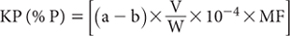
where:
a = P in air-dry sample digest, expressed as mg/L
b = P in digest blank (mg/L)
V = final volume of sample digest (mL, usually 50 mL)
W = sample weight (g)
10–4 = factor to convert mg/kg to g/100g (%)
MF = air-dry to oven-dry moisture factor
For a 0.5 g air-dry sample and 50 mL digest volume:
KP (%P; oven dry) = [(a – b) × 0.01 × MF]
Report KP (% P) on an oven-dry basis.
1. While K is included in both the Primary Standard and in Working Standards, this does not infer that the resultant estimate of Kjeldahl K is a good approximation of total soil K. Indeed, recoveries can be as low as 5–10% of the total.
Prepare digest solutions and standard solutions as per Method 9A3a. Filter [Whatman No. 1 (or equivalent) filter paper, 11 cm] or centrifuge an aliquot of the final digest solution if necessary. Complete the analysis by ICPAES using the appropriate wavelength for P. Examples include 213.618 nm for radial mode ICPAES and 178.221 nm for axial mode ICPAES, although other wavelengths are available (e.g. Yang et al. 2002).
Determine concentrations of KP in the soil digest solutions directly from standards (KCWS from 9A3a) run on commencement, during the ‘run’, and on completion. Dilute soil digest solutions of high concentrations with Reagent Blank, which also serves as the zero working standard.
Report KP (% P) on an oven-dry basis. Use the air-dry moisture to oven-dry moisture ratio to make the oven-dry conversion. Refer to Method 2A1 for guidance with regard to this soil moisture calculation.
Table 9.4. Ratings by Bruce and Rayment (1982) for bicarbonate-extractable P and acid-extractable P (mg P/kg) in air-dry surface soÕs from north-east Australia.
Rating |
Value/range |
Very low |
<10 |
Low |
10–20 |
Medium |
>20–40 |
High |
>40–100 |
Very high |
>100 |
This empirical method favours both readily available and the quantity component of soil P. It provides an estimate of P fertility via correlations with crop and pasture response to P on acid, neutral, and alkaline soils in several Australian regions (e.g. Colwell 1963, Rayment and Helyar 1980). It has also been used to assess the ‘available’ P status of many Australian soils (Stace et al. 1968), and is one of two soil P tests required for the final calculation of PBI+ColP.
Ratings for bicarbonate-extractable P relevant to north-eastern Australia (Bruce and Rayment 1982; Table 9.4) provide guidance on levels typical of many natural surface soils. Soils with a significant past history of fertiliser applications could contain three or more times the upper value in Table 9.4, while the vast majority of unfertilised Australian soils would rate as very low to low.
The bicarbonate extracting solution [0.5 M NaHCO3 at pH 8.5 (with NaOH)] is best when freshly prepared on the day of use. Moreover, there is no inclusion of activated C prior to soil extraction for 16 h at a soil/solution ratio of 1:100 (Colwell 1963). The manual analytical finish of Colwell (1963) is based on Murphy and Riley (1962), following acidification of the bicarbonate extract with H2SO4. This acid is preferred to HCl for neutralisation of the bicarbonate extract, since the latter lowers the sensitivity of spectrophotometric methods involving the molybdophosphoric blue complex (e.g. Table 7-1 of Jackson 1962).
The alternative, automated analytical finish of Colwell (1965) is no longer recommended, as it includes chemical modifications sufficient to sometimes affect the outcome, one being the use of HCl for neutralisation and the other involving strong heating. Papers by Murphy and Riley (1962), Watanabe and Olsen (1965), Salt (1968), Dick and Tabatabai (1977) and Tarapchak (1983) present evidence that hydrolysis of organic P is enhanced by long time periods for colour development, and by heating. Excessive acidification has also been shown (John 1970) to elevate apparent P concentrations. McLeod (1982) provides further information on NaHCO3-soluble P.
The method is a modification (Colwell 1963) of the original bicarbonate procedure of Olsen et al. (1954). It employs an extracting solution of 0.5 M NaHCO3 adjusted to pH 8.5 with sodium hydroxide (NaOH), a soil/solution ratio of 1:100, and an extraction time of 16 h at 25°C. The manual colorimetric finish is based on the method of Murphy and Riley (1962). There is no prior adjustment of soil pH, or any attempt to remove possible interferences such as arsenate and silicates. Any precipitation during the final determination of soluble P, possibly associated with organic compounds, is ignored. Slight acidification of soil extracts with H2SO4 just before final analysis helps to minimise positive interferences from soluble silicates.
Extracting Solution – 0.5 M Sodium Bicarbonate at pH 8.5
Dissolve 42.0 g sodium bicarbonate (NaHCO3) in deionised water, dilute to almost 1.0 L, adjust pH to 8.5 (usually requires 0.8 g NaOH), and make volume to 1.0 L. Take care not to exceed pH 8.55: refer to Note 1. This Extracting Solution is best prepared on day of use; if storage is necessary, keep under nitrogen or mineral oil or utilise a CO2 trap to prevent entry of this atmospheric contaminant: also refer to Note 2.
2.25 M Sulfuric Acid
1.0 M Sulfuric Acid
Reagent A (Ammonium Molybdate – Sulfuric Acid – Sb Solution)
As for Method 9A2.
Mixed Colour Reagent
As for Method 9A2.
Phosphorus Primary Standard
As for Method 9A2.
Phosphorus Secondary Standard
1 L contains 10.0 mg of P.
Take 100 mL P Primary Standard and dilute accurately to 500mL in a volumetric flask with Extracting Solution (0.5 M NaHCO3 at pH 8.5). This solution should be freshly prepared each time working standards are made.
Phosphorus Working Standards
Add 0, 1.0, 2.5, 5.0, 10.0, 15.0, 20.0, 30.0, 40.0 and 50.0 mL of P Secondary Standard to separate 500 mL volumetric flasks. Dilute to 500 mL with 0.5 M NaHCO3 at pH 8.5 Extracting Solution. These working standards cover the range 0–1 mg P/L and for a 1:100 soil/solution ratio are equivalent to soil concentrations of 0, 2.0, 5.0, 10.0, 20.0, 30.0, 40.0, 60.0, 80.0 and 100.0 mg/P kg.
Weigh 1.00 g of air-dry soil (<2 mm) into a 250 mL extracting bottle and add 100 mL Extracting Solution (0.5 M NaHCO3 at pH 8.5), stopper and mechanically shake end-over-end for 16 h at 25°C. Centrifuge or filter (Whatman No. 42 – tested P free) soil extracts then pipette duplicate 25 mL aliquots into 100 mL volumetric flasks. Add 50 mL deionised water and mix thoroughly. Add 2 mL 1 M H2SO4, mix and, after effervescence has ceased, add a further 5 mL of 1 M H2SO4. Mix well and allow to stand overnight to complete the removal of CO2.
To one set of volumetric flasks add 8 mL Mixed Colour Reagent, then make to 100 mL and mix well. To the duplicate flasks (the reagent blanks) add 8 mL of Reagent A, make to 100 mL and mix well. Concurrently with the samples, take 25 mL of each P Working Standard and treat in a similar manner to the samples.
After 30 min, measure the absorbance at 882 nm of samples, standards, and soil-reagent blanks against deionised water as a reference. The absorbance values remain stable for up to 24 h. If necessary, dilute over-range extracts with NaHCO3 Extracting Solution. Same-day measurement following acidification is preferred to limit the possibility of chemical and/or biological change.
Bicarbonate-extractable P = [Sample value – Reagent blank] mg P/kg
Report bicarbonate-extractable P (mg P/kg) on an air-dry basis.
1. The preferred pH tolerance is 8.48–8.52, ideally measured with a sodium-tolerant glass electrode, with the pH meter calibrated to pH 9.0.
2. If wetting agents/detergents are required for any purpose, including cleaning of apparatus, only those known to be P-free should be used.
Segmented, continuous flow analysis (SFA) is broadly described by Gordon et al. (1993) as well as in the preamble to Method 7A2a. Two SFA options are provided.
The colorimetric finish to this method is based on Murphy and Riley (1962). An earlier automated procedure (Colwell 1965) is avoided as it uses heat to assist both neutralisation and ‘molybdenum blue’ colour development. The text of Method 9B and the preamble to Method 9B1 contains further information on this soil P test, presently the most commonly used in Australia. There is no prior adjustment of soil pH, nor any attempt to remove possible interferences.
Ethyl alcohol and Levor IV wetting agent (or equivalent) are included in the combined H2SO4-molybdenum/ascorbic acid/antimony colour reagent to help prevent adsorption and/or precipitation of any phosphorus-molybdenum-antimony complex on or within the mixing coils, along lines suggested by Salt (1968). The automated acidification of soil extracts with H2SO4 prior to addition of colour reagents helps minimise positive interferences from soluble silicates. The wide soil/solution ratio lessens possible interferences from soluble organics.
For 47 Australian soils with Colwell-P levels (manual procedure described by Colwell 1963) ranging from 2–48 mg P/kg, the linear relationship (r2 = 0.99) between the manual (X) and automated procedure (Y), using split extracts, was Y = 1.029X–0.527.
While AutoAnalyzer I/II and microbore technologies are described, FIA provides an alternative analytical finish. It is acknowledged that the analyst must be guided by the operational instructions and directions given by the manufacturer. This could require changes to the specified reagents and to the flow diagrams provided for this method. Nevertheless, equivalence with the original manual procedure of Colwell (1963) should be no worse than the relationship given in the previous paragraph.
Extracting Solution – 0.5 M NaHCO3 at pH 8.5
As for Method 9B1.
Reagent A (Ammonium Molybdate - Sulfuric Acid Solution)
Dissolve 20.0 g ammonium molybdate [(NH4)6Mo7O24.4H2O] in 400 mL of warm distilled (preferred) or deionised water (not above 50°C), then cool. Add 125 mL sulfuric acid (H2SO4; 18 M), slowly and with stirring, to 400 mL distilled or deionised water and cool. Combine by slowly adding the ammonium molybdate solution to the dilute acid, stirring continuously. Make volume to 1.0 L with water and store in a dark, cool place (≈4°C) in borosilicate glass. (See Note 1.)
Reagent B (l-Ascorbic Acid)
Dissolve 1.7 g l-ascorbic acid (C6H8O6) in 100 mL distilled or deionised water. Make freshly each day.
Reagent C (Potassium Antimony Tartrate)
Dissolve 0.23 g potassium antimony tartrate (KSbO.C4H4O6) in deionised water and dilute to 100 mL. If kept cool, this solution remains stable for some weeks.
Color Reagent
Mix 100 mL Reagent B with 138 mL Reagent A and then add 20 mL of Reagent C. Dilute 1 mL of Levor IV wetting agent or suitable substitute (e.g. Skalar 13902) in about 50 mL water and add to the mixture. Finally, add 25 mL ethanol and make volume to 500 mL with deionised water. Prepare fresh daily.
0.75 M Sulfuric Acid
Bicarbonate Wash Solution (Probe rinse)
Wash solution is 0.5 M NaHCO3 at pH 8.5 as used for soil extraction.
Si Solution
Shake 1 g precipitated silica (SiO2) with about 100 mL 0.5 M NaHCO3 at pH 8.5 Extracting Solution end-over-end for 16 h then filter. Retain the filtrate, which should contain around 40 mg Si/L.
Phosphorus Primary Standard
As for Method 9A2.
Phosphorus Secondary Standard
As for Method 9B1.
Phosphorus Working Standards
As for Method 9B1.
Weigh 1.00 g of air-dry soil (<2 mm) into 250 mL extracting bottles and add 100 mL Extracting Solution (0.5 M NaHCO3 at pH 8.5), stopper and mechanically shake end-over-end for 16 h at 25°C. Centrifuge or filter prior to automated colorimetric analysis.
Ensure individual components of the bicarbonate SFA system (either AutoAnalyzer I/II technology or micro-bore technology) are connected as detailed on the relevant flow sheet (Figure 9.4 or Figure 9.5, respectively) or in accord with the manufacturer’s instruction. Next, ‘condition’ the manifold of choice (FIA is an alternative) before use, ensuring all CO2 is removed at the B4 phase separator (or equivalent), and check instrument settings. Make occasional checks (Note 2) to ensure there is just sufficient acidity to prevent significant interference from silicates or from self-reduction of molybdate ions.
Determine concentrations of P in the soil extracts directly (mg P/kg) from calibration standards run on commencement, after at least every 30 soil extracts, and on completion. Dilute soil extracts of high P concentrations with Extracting Solution. Instrument selections and settings should be in accord with manufacturer’s instructions. Same-day measurement is preferred to limit the possibility of chemical and/or biological change: store filtered samples at 4°C overnight only if same-day analysis is not possible.
Report bicarbonate-extractable P (mg P/kg) on an air-dry basis.
Figure 9.4. A continuous, segmented flow sheet (AutoAnalyzer I/II technology) for Colwell-P
1. Distilled water is specified because it is typically free of organic impurities that can interfere with this reagent. Alternatively, deionised water can be used if it contains no significant organic impurities (including resin functional groups) that can sometimes interact with the reagent, with consequential adverse analytical effects.
2. Residual acidity during colour development has been designed to avoid self-reduction by molybdate ions, a situation that can occur if acidity is too low (Boltz and Mellon 1947). Positive interference from Si may also occur if acidity is too low. To check, introduce two tubes of Si Solution in place of soil extracts. If a stable baseline is maintained, this is evidence that there is sufficient residual acidity present. If significant peaks are observed, the pump tube supplying H2SO4 to neutralise NaHCO3 extracts may be delivering too little acid and/or the acid strength may need to be increased slightly.
The method of Olsen et al. (1954) has wide international acceptance as an indicator of soil P fertility. Olsen’s method is based on extraction of air-dry soil with 0.5 M NaHCO3, adjusted to pH 8.5 with NaOH. Soil extraction is for 30 min at a soil/solution ratio of 1:20. There is no prior adjustment of soil pH, or any attempt to remove possible interferences such as arsenate and silicate.
Soluble orthophosphate-P in the clarified soil extracts was originally measured using the procedure of Dickman and Bray (1940), with activated C (P-free) included during soil extraction to absorb soluble organic matter and organic P. Subsequently, it was demonstrated (Watanabe and Olsen 1965) that activated C could be excluded from the extraction step when soluble P was measured manually by the Murphy and Riley (1962) procedure. This analytical finish is incorporated in the manual and automated methods described. Soil extracts by this method typically have more organic matter colouring than do corresponding extracts obtained using the Colwell (1963) modification. This can be the cause of analytical interference, especially when soils high in OM are acidified as part of the colorimetric reaction.
Figure 9.5. A micro-bore continuous flow manifold for Colwell-P.
By virtue of its relatively short extraction time and narrow soil/solution ratio, Olsen-P reflects the intensity component of soil P, rather than the quantity component favoured by the Colwell (1963) modification (White and Haydock 1967). Results for any given soil are almost always lower than corresponding values obtained for the Colwell-P test.
Extracting Solution – 0.5 M Sodium Bicarbonate at pH 8.5
As for Method 9B1.
Reagent A
Dissolve 12.0 g ammonium molybdate [(NH4)6Mo7O24.4H2O] in 250 mL distilled water. Separately dissolve 0.2908 g potassium antimony tartrate (KSbO.C4H4O6) in 100 mL distilled water. Add both of the dissolved reagents, while stirring, to 1 L of cool 2.5 M H2SO4 (139 mL 18 M H2SO4 to 1 L with distilled water). Mix thoroughly and make volume to 2 L with distilled water. This reagent remains stable for long periods when stored in borosilicate glass in a dark, cool place. (See Note 1 of Method 9B2.)
Colour Reagent B
Dissolve 1.056 g of l-ascorbic acid (C6H8O6) in 200 mL of Reagent A and mix well. Prepare as required as this reagent does not keep for >24 h.
p-Nitrophenol Indicator
As for Method 9A2.
2.5 M Sulfuric Acid
Phosphorus Primary Standard
1 L contains 100.0 mg of P.
Dissolve 0.2197 g potassium dihydrogen phosphate (KH2PO4; previously dried at 130°C for 2 h) in 0.5 M NaHCO3 at pH 8.5 Extracting Solution and make to 500 mL in a volumetric flask. Add 2 drops of chloroform (CHCl3) to suppress biological activity. Store solution in borosilicate glass, preferably cool (≈4°C) and in the dark, where it should remain stable for at least 6 months.
Phosphorus Secondary Standard
1 L contains 20.0 mg of P.
Take 100 mL P Primary Standard and dilute to 500 mL in a volumetric flask with Extracting Solution (0.5 M NaHCO3 at pH 8.5). This standard should be freshly prepared each time working standards are required.
Phosphorus Working Standards
Add 0, 5, 10, 15, 20, 25, 37.5 and 50 mL of P Secondary Standard to separate 500 mL volumetric flasks. Dilute to 500 mL with Extracting Solution to give P concentrations in solution ranging from 0–2.0 mg P/L. For a 1:20 soil/solution ratio, these standards contain soil concentrations equivalent to 0, 4, 8, 12, 16, 20, 30, 40 mg P/kg.
Weigh 5.0 g air-dry soil (<2 mm) into a 250 mL extracting bottle and add 100 mL Extracting Solution (0.5 M NaHCO3 at pH 8.5), stopper and mechanically shake end-over-end for 30 min at 25°C; see Notes 1–3. Quickly centrifuge or filter (Whatman No. 42 – tested P free) to clarify.
Pipette a known aliquot of the particle-free extract – usually 5.0 mL – into a 25 mL volumetric flask. Add 1 drop of p-nitrophenol indicator and acidify carefully to pH 5.0 with 2.5 M H2SO4. Dilute to 20 mL with deionised water, mix, add 4.0 mL of Colour Reagent B, make volume to 25 mL with deionised water and mix well. Concurrently with the samples, take identical volumes (usually 5.0 mL) of a range of P Working Standards and treat in a similar manner to soil extracts.
After 30 min, measure absorbance (882 nm) of samples, standards, and a reagent blank against deionised water as a reference. The absorbance values remain stable for up to 24 h. Prepare a calibration curve of absorbance against concentrations of standards. Read concentrations of samples and reagent blanks from the graph or from an equivalent regression equation. Same-day measurement following acidification is preferred to limit the possibility of chemical and/or biological change.
Olsen-extractable P = [sample value – reagent blank] (mg P/kg)
Report Olsen-extractable P (mg P/kg) on an air-dry soil basis.
1. One teaspoon of P-free carbon black (e.g. Darco G-60 or equivalent) can be added prior to soil extraction if there is concern that coloured organic matter and/or organic P could interfere during development of the molybdenum-blue complex.
2. Should there be concern that biological activity during soil extraction/analysis could affect P concentrations, add 2 drops of thymol solution (20% w/v) immediately following addition of 0.5 M NaHCO3 at pH 8.5 Extracting Solution to the soil. Thymol solution may also be added to the P Working Standards.
3. If wetting agents/detergents are used for any purpose, including cleaning of apparatus, only those known to be P-free should be used.
The automated colorimetric finish of this method was adapted in Victoria (G Rubenis) from Colwell (1965). The manifold incorporates in-line filtration following neutralisation of 0.5 M NaHCO3 extracts at ambient temperature with dilute H2SO4. The subsequent automated molybdenum-blue colour reaction is similar to Murphy and Riley (1958). The flow chart (Figure 9.6) includes a heating coil.
Users of this automated finish should note that inclusion of a high temperature heating step to accelerate colour development may enhance apparent P values through hydrolysis of organically bound P (e.g. Salt 1968). Use of in-line filtration to remove any flocculent precipitate of organic compounds, following neutralisation of 0.5 M NaHCO3 extracts, probably limits this effect, which is greatest in acidic soils of high OM content.
See Method 9C and the preamble of Method 9C1 for further information on this soil P test.
Extracting Solution – 0.5 M NaHCO3 at pH 8.5
As for Method 9B1.
Ammonium Molybdate – Sulfuric Acid Solution
Weigh 20.0 g ammonium molybdate [(NH4)6Mo7O24.4H2O] and transfer to a 2 L conical, borosilicate flask. Add ≈500 mL distilled water and carefully add 100 mL 18 M H2SO4 down the sides of the flask. Swirl to mix and dissolve the (NH4)6Mo7O24.4H2O. Cool and make to volume with distilled water.
Ascorbic Acid
Dissolve 1.0 g l-ascorbic acid (C6H8O6) in 100 mL deionised or distilled water. Make fresh each day.
0.75 M Sulfuric Acid
Thymol Solution (20% w/v)
Dissolve 10 g thymol (C10H14O) in 50 mL ethanol (C2H5OH).
Si Solution
As for Method 9B2.
Phosphorus Primary Standard
As for Method 9C1.
Phosphorus Secondary Standard
As for Method 9C1.
Phosphorus Working Standards
As for Method 9C1.
Weigh 5.0 g air-dry soil (<2 mm) into a 250 mL extracting bottle and add 100 mL Extracting Solution (0.5 M NaHCO3 at pH 8.5), stopper and mechanically shake end-over-end for 30 min at 25°C. Quickly centrifuge or filter (Whatman No. 42 - tested P free) to clarify. Alternatively, should the supply of soil be limited, weigh 1.00 g air-dry soil (<2 mm) into a polypropylene bottle or centrifuge tube. Add 20 mL extracting reagent, stopper or screw to seal, then extract end-over-end 30 min at 25°C. As the amount of P extracted is time dependent, it is important to add the extractant and to time the commencement of shaking without delay. Accordingly, use equipment capable of mass production or limit batch sizes to around 30–50 samples. Include two reagent blanks and one laboratory control sample per 20–30 samples through the same extraction procedure and subsequent analysis.
Quickly filter (e.g. Advantec Toyo 5C filter paper) or centrifuge into/in vials or tubes. Analyse on the day of extraction: refer to Notes 1–3 of Method 9C1.
Ensure individual components of the Olsen-P continuous segmented flow manifold are connected as detailed on the flow sheet (Figure 9.6); instrument selections and settings should be in accord with manufacturer’s instructions. The analyst should be guided by the operational instructions and directions given by the manufacturer. This could require changes to the specified reagents and to the flow diagram provided for this method.
‘Condition’ the manifold before use and make occasional checks to ensure there is just sufficient acidity to prevent significant interference from silicates or from self-reduction of molybdate ions.
Determine concentrations of P in the soil extracts directly (mg P/kg) from calibration standards run on commencement, after at least every 30–50 soil extracts, and on completion. Use the 0.5 M NaHCO3 at pH 8.5 Extracting Solution as the wash solution and to dilute soil extracts of high P concentrations. Same-day measurement is preferred to limit the possibility of chemical and/or biological change.
Report Olsen-extractable P (mg P/kg) on an air-dry soil basis.
This method is based on the P extraction method of Olsen et al. (1954). It is similar to that used by commercial laboratories to produce soil P test values for New Zealand soils (Cornforth 1980).
The determination of P in clarified extracts is based on the molybdenum-blue method of Murphy and Riley (1962) using FIA. Orthophosphate reacts with ammonium molybdate and potassium antimony tartrate under acidic conditions. The complex formed is then reduced with ascorbic acid, with absorbance measured at 882 nm.
A silicate concentration of over 100 mg/L would be needed to produce a positive 0.015 mg P/L error. If such possibility is suspected, use the silicate solution specified and refer to Note 2 of Method 9B2.
Extracting Solution – 0.5 M NaHCO3 at pH 8.5
As for Method 9B1.
Stock Ammonium Molybdate Solution
Weigh 40.0 g ammonium molybdate tetrahydrate [(NH4)6Mo7O24.4H2O] into a 1.0 L flask and make to volume with distilled (preferred) or deionised water. Stir magnetically overnight to dissolve and filter if necessary. Store at ≈4°C: see Note 1 of Method 9B2.
Figure 9.6. A continuous, segmented flow sheet (AutoAnalyzer I/II technology) for Olsen-P.
Stock Potassium Antimony Tartrate Solution
Weigh 2.9 g of anhydrous potassium antimony tartrate [K(SbO)C4H4O6] into a 1.0 L flask and make to volume with distilled (preferred) or deionised water. Shake to dissolve and store at ≈4°C.
Molybdate Colour Reagent
To a 1.0 L dark borosilicate flask containing 340 mL distilled (preferred) or deionised water, carefully and slowly add 18 mL of 18 M H2SO4. Swirl to mix and allow the now hot mixture to cool to around room temperature. Add 107 mL of Stock Ammonium Molybdate Solution and 36 mL of Stock Potassium Antimony Tartrate Solution. Shake to mix and prepare fresh monthly. There may be a water quality problem if this mixed solution should become cloudy, in which case, use only distilled water or deionised water known not to contain organic impurities. Store the Molybdate Colour Reagent at ≈4°C but allow it to reach room temperature before use.
Ascorbic Acid Solution
Weigh 3.0 g l-ascorbic acid (C6H8O6) in distilled water and dissolve. Add 0.05 g of sodium dodecyl sulfate [CH3(CH2)11OSO3Na] and shake to dissolve, then make to 100 mL. Prepare freshly each day.
Si Solution
As for Method 9B2.
Olsen-P Primary Standard
1.0 mL contains 0.10 mg P (i.e. 100 mg P/L)
Weigh 0.2197 g potassium dihydrogen phosphate (KH2PO4; previously dried at 130°C for 2 h) and dissolve in 0.5 M NaHCO3 at pH 8.5 Extracting Solution and dilute to 500 mL in a volumetric flask. Add 2 drops chloroform (CHCl3) to suppress biological activity and store solution in borosilicate glass in dark at ≈4°C, where it remains stable for 6 months.
Figure 9.7. Example of a FIA manifold for Olsen-P.
Olsen-P FIA Working Standards
Pipette 1, 2.5, 5, 10 and 20 mL aliquots of Olsen-P Primary Standard into 100 mL volumetric flasks and make to volume with 0.5 M NaHCO3 at pH 8.5 Extracting Solution. These contain 1, 2.5, 5.0, 10.0 and 20.0 mg PO4-P/L, which for a 1:20 soil/solution ratio are equivalent to 20, 50, 100, 200 and 400 mg P/kg, respectively.
Weigh 5.0 g of air-dry soil (<2 mm) into a 250 mL extracting bottle and add 100 mL Extracting Solution (0.5 M NaHCO3 at pH 8.5), stopper and mechanically shake end-over-end for 30 min at 25°C; see Note 1 of Method 9C2a. Quickly centrifuge or filter (Whatman No. 42 – tested P-free) to clarify. Alternatively, should the supply of soil be limited, weigh 1.00 g air-dry soil (<2 mm) into a polypropylene bottle or centrifuge tube. Add 20 mL extracting reagent, stopper or screw to seal, then extract end-over-end for 30 min at 25°C. As the amount of P extracted is time dependent, it is important to add the extractant and to time the commencement of shaking without delay. Accordingly, use equipment capable of mass production or limit batch sizes to around 30–50 samples. Include two reagent blanks and one laboratory control sample for each batch of 30–50 samples through the same extraction procedure and subsequent analysis.
Quickly filter (e.g. Advantec Toyo 5C filter paper) or centrifuge into/in vials or tubes. Analyse on the day of extraction: refer to Notes 2 and 3 of Method 9C1.
Set up the FIA instrumentation along the lines shown in Figure 9.7. Ensure the dialyser is operating correctly by checking entry and exit tubes are connected correctly. Make occasional checks to ensure there is just sufficient acidity to prevent significant interference from silicates or from self-reduction of molybdate ions.
Switch on the computer, load the software, prepare sample table and load sampler. Pump deionised water through all reagent lines and check for leaks and smooth flow. When all is OK, switch to reagents and allow system to equilibrate for a few minutes, then commence to run standards and samples.
Determine concentrations of P in the soil extracts directly (mg P/kg) from calibration standards run on commencement, after at least every 30–50 soil extracts, and on completion. Use the 0.5 M NaHCO3 at pH 8.5 Extracting Solution as the wash solution and to dilute soil extracts of high P concentrations. Same-day measurement is preferred to limit the possibility of chemical and/or biological change.
Report Olsen-extractable P (mg P/kg) on an air-dry soil basis.
Lactate is a successful extractant for predicting yield response to P on non-acidic wheat-growing soils in New South Wales (NSW) (Colwell 1970; Holford et al. 1985; Holford and Cullis 1985). The method, however, has not found wide use across Australasia. A strength is that lactate integrates the quantity and intensity components of labile P and hence gives a critical value for P response that does not vary with changing soil buffer capacity.
The extracting solution can be either calcium lactate in dilute HCl or ammonium lactate in dilute CH3COOH, but Ca-lactate is preferred as it is simpler to prepare. It is claimed both reagents extract similar quantities of soil P and have the same critical value for wheat (18 mg P/kg) in NSW.
Extracting Solution – 0.02 M Calcium Lactate in 0.01 M HCl
Dissolve 30.83 g calcium lactate {[CH3CH(OH)COO]2Ca.5H2O} in deionised water, add 5 mL 10 M HCl and make to 5.0 L with deionised water. The pH should be 3.7.
2.25 M Sulfuric Acid
Reagent A (Ammonium Molybdate – Sulfuric Acid – Sb Solution)
Dissolve 12.0 g ammonium molybdate [(NH4)6Mo7O24.4H2O] in 250 mL distilled (preferred) or deionised water. Separately dissolve 0.2908 g potassium antimony tartrate (KSbO.C4H4O6) in 100 mL distilled/deionised water. Add both solutions to 1.0 L of cool 2.25 M H2SO4 (prepared using distilled water), dilute to 2.0 L with distilled water and mix thoroughly. Store in a dark, cool place (≈4°C) in borosilicate glass for up to several months.
Mixed Colour Reagent
Dissolve 1.32 g l-ascorbic acid (C6H8O6) in 250 mL Reagent A. This reagent should be prepared on day of use.
As for Method 9A2.
Phosphorus Secondary Standard
1 L contains 5 mg of P
Dilute 10.0 mL P Primary Standard to 100 mL with deionised water.
Weigh 1.00 g air-dry soil (<2 mm) into 250 mL flask or bottle, and add 50 mL 0.02 M Calcium Lactate in 0.01 M HCl Extractant. Stopper and shake for 90 min at 25°C on a slow end-over-end or high-speed orbital shaker. Centrifuge or filter extract through Whatman No. 42 fluted paper. Pipette 25 mL of particulate-free extract into 100 mL volumetric flask. Add 8 mL Mixed Colour Reagent and dilute to 100 mL with deionised water.
Concurrently, take 0, 1.0, 2.0, 3.0, 4.0 and 5.0 mL aliquots of the P Secondary Standard in 100 mL volumetric flasks, add 25 mL extractant, 8 mL Mixed Colour Reagent, and dilute each standard to 100 mL with deionised water. Mix well. These working standards contain 0, 0.05, 0.1, 0.15, 0.20 and 0.25 mg P/L. For a 1:50 soil/solution ratio and a 25 mL aliquot diluted to 100 mL, these working standards contain equivalent to soil concentrations of 0, 10, 20, 30, 40 and 50 mg P/kg.
After 30 min (colour is stable for 24 h) measure absorbance at 882 nm (preferred) or 720 nm of the samples, standards, and a reagent blank, against deionised water as a reference. Prepare a calibration curve (or regression equation) of absorbance against concentration of the working standards. Interpolate or calculate the concentrations of the samples and reagent blank from the graph (or equivalent). Dilute soil extracts of high P concentrations with 0.02 M Calcium Lactate in 0.01 M HCl Extracting Solution prior to analysis.
Lactate-extractable P (mg P/kg) = [Sample value – Reagent blank]
Report lactate-extractable P (mg P/kg) on an air-dry basis.
The weakly acidic Bray 1-P test was developed by Bray and Kurtz (1945), particularly for use to assess the P status of acid to neutral soils. The extractant is a dilute solution (0.03 M) of ammonium fluoride (NH4F) and 0.025 M hydrochloric acid (HCl). It was designed to operate at a 1:7 soil/solution ratio with an extraction time of 60 sec. The test integrates the quantity and intensity components of labile P and hence gives a critical value for plant response to P fertiliser that does not vary with changing soil buffer capacity. It sometimes extracts excess P from soils of high Al status and is inappropriate for use on soils containing >2% of dolomite or limestone (Frank et al. 1998).
The Bray No. 2 Extracting Solution contains the same concentration of NH4F but has a higher HCl concentration of 0.1 M. Accordingly, it favours sorbed plus acid-soluble forms of P (McIntosh 1969).
Different groups have modified the specifications of the Bray 1-P test, perhaps sufficiently to affect soil test results (see Table 9.5 for examples).
This fluoride-based test is reported to be suited to predicting yield response to P by legume-based pastures on acid to neutral soils of New South Wales. Otherwise, it is little employed in Australia beyond that State, although it is used internationally, including the north central Region of the United States, where it is the most common soil P test.
Table 9.5. Examples of key method parameters quoted for Bray 1-P, all with an Extracting SolutŠn of 0.03 M NH4F/0.025 M HCl.
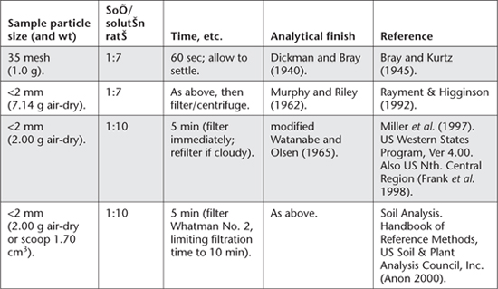
While Bray 1-P is a relatively simple and quick soil P test for ‘sorbed P’, the very short extraction time (60 sec) makes it prone to ‘out-of-specification’ operation, which may affect results. This is supported by findings from over 10 years of inter-laboratory proficiency testing in Australasia, where Bray 1-P has consistently been the worst-performed extractable P test in programs operated by ASPAC. The other two tests are Colwell-P and Olsen-P (e.g. Figure 9.2, and Rayment et al. 2000). Clearly, strict adherence to method specifications is imperative. Manual and automated colorimetric procedures are provided as Method 9E1 and 9E2.
As with other soil P tests that employ a molybdenum-blue analytical finish, interferences from silicate, arsenates and Fe3+ are possible, if at elevated concentrations. For example, a Si concentration of ≈4000 mg/L could cause a positive error of ≈1.0 mg PO4-P/L, while ≥50 mg Fe3+/L could cause a negative error due to competition for the ascorbic acid reducing agent. Pre-treatment with sodium bisulfite can eliminate the Fe3+ (and arsenate) interference (Frank et al. 1998) but such action is rarely necessary.
The original manual colorimetric ‘finish’ for Bray 1-P of Bray and Kurtz (1945) was that of Dickman and Bray (1940). The analytical ‘finish’ described is based on Murphy and Riley (1962), which is known to be superior to the original.
Extracting Solution – 0.03 M Ammonium Fluoride in 0.025 M HCl
Dissolve 2.22 g ammonium fluoride (NH4F) in 100 mL deionised water. Add 5 mL 10 M HCl (or an equivalent volume of dilute HCl) then transfer to 2 L volumetric flask and make to volume with deionised water. The pH should be 2.6 ± 0.05: make necessary pH adjustments using HCl or NH4OH.
2.25 M Sulfuric Acid
Reagent A (Ammonium Molybdate – Sulfuric Acid – Sb Solution)
As for method 9D1.
Mixed Colour Reagent
As for Method 9D1.
Phosphorus Primary Standard
As for Method 9A2.
Phosphorus Secondary Standard
As for Method 9D1.
Weigh 7.14 g air-dry soil (<2 mm) into 250 mL flask or bottle, and add 50 mL 0.03 M NH4F in 0.025 M HCl Extracting Solution. Stopper and shake for 60 s at 25°C. (Time this extraction accurately.) Immediately centrifuge or filter (Whatman No. 42) to obtain particle-free soil extracts. Pipette 10 mL of this extract into a 100 mL volumetric flask. Add 8 mL Mixed Colour Reagent and dilute to 100 mL with deionised water on the day of extraction.
Concurrently, take 0, 2.0, 4.0, 6.0, 8.0 and 10.0 mL aliquots of the P Secondary Standard in 100 mL volumetric flasks. Add 10 mL extractant, 8 mL Mixed Colour Reagent, and dilute each standard to 100 mL with deionised water and mix well. These working standards contain 0, 0.1, 0.2, 0.3, 0.4 and 0.5 mg P/L. For a 1:7 soil/solution ratio and a 10 mL aliquot diluted to 100 mL, these working standards contain soil concentrations of 0, 7, 14, 21, 28 and 35 mg P/kg.
After 30 min (colour is stable for 24 h) measure absorbance at 882 nm (preferred) or 720 nm of the samples, standards, and a reagent blank against deionised water as reference. Prepare a calibration curve (or equivalent) of absorbance against concentration of the working standards. Interpolate the concentrations of the samples and reagent blank from the graph (or alternative). Dilute soil extracts of high P concentrations with 0.03 M NH4F in 0.025M HCl Extracting Solution.
Fluoride-extractable P (mg P/kg) = [Sample value – Reagent blank]
Report fluoride-extractable P (mg P/kg) on an air-dry basis.
The automated colorimetric finish described (Abbott 1989) is similar to procedures of Brewer et al. (1965) and Grigg (1975). The colour reaction is based loosely on molybdate-Sb-ascorbic acid (Murphy and Riley 1962), with separate manifolds for low P and high P soil extracts. The two P manifolds incorporate a heating step (85°C). A boric-tartaric solution is used as a diluent in both manifolds, since the tetrafluoborate complex that forms does not interfere in the subsequent molybdenum blue colour development. See the text of Method 9E and the preamble of Method 9E1 for further information on the Bray 1-P soil test.
While AutoAnalyzer I/II technology is described, microbore or FIA are appropriate alternatives, ideally without heating to speed colour development. The analyst must be guided by the operational instructions and directions given by the manufacturer. This could require changes to the specified reagents and to the flow diagram provided for this method. Nevertheless, the results obtained should be close to those obtained by Method 9E1.
Extracting Solution – 0.03 M Ammonium Fluoride in 0.025 M HCl
As for Method 9E1.
Reagent A (Ammonium Molybdate – Sulfuric Acid – Sb Solution)
Dissolve 8.58 g ammonium molybdate [(NH4)6Mo7O24.4H2O] in about 600 mL distilled (preferred) or deionised water. Add slowly 99.2 mL 18 M H2SO4, to maintain temperature <60°C and mix well. Separately dissolve 0.196 g potassium antimony tartrate (KSbO.C4H4O6) in about 100 mL of distilled or deionised water then combine the two solutions and make to 1.0 L. Store in a dark, cool (≈4°C) place in borosilicate glass: see Note 1 of Method 9B2.
Ascorbic Acid
Dissolve 1.75 g l-ascorbic acid (C6H8O6) in 200 mL deionised water. This reagent should be prepared on day of use.
Boric-Tartaric Diluent
Separately dissolve 36 g boric acid (H3BO3) and 2.4 g (+)-tartaric acid (CHOHCOOH)2, combine and dilute to 1 L with deionised water.
2.5 M H2SO4
Phosphorus Primary Standard
1 L contains 500 mg of P.
Weigh 1.0984 g potassium dihydrogen phosphate (KH2PO4; previously dried at 130°C for 2 h), dissolve, add 35 mL 2.5 M H2SO4, mix well and dilute to 500 mL with deionised water in a volumetric flask. Add 2 drops chloroform (CHCl3) to suppress biological activity and store solution in borosilicate glass, preferably in a cool, dark place, where it should remain stable for at least 6 months.
Phosphorus Secondary Standard – High Strength
1 L contains 50 mg of P.
Take 50.0 mL P Primary Standard and dilute to 500 mL in a volumetric flask with 0.03 M NH4F in 0.025 M HCl Extract Solution. Freshly prepare each time working standards are required.
Phosphorus Secondary Standard – Low Strength
1 L contains 4 mg of P.
Take 4.0 mL P Primary Standard and dilute to 500 mL in a volumetric flask with 0.03 M NH4F in 0.025 M HCl Extract Solution. Freshly prepare each time working standards are required.
Figure 9.8. A continuous, segmented flow sheet (AutoAnalyzer I/II technology) for Bray 1-P (low range).
Phosphorus Working Standards – High Range
Add 0, 5.0, 10.0, 20.0, 40.0, 60.0 and 80.0 mL of P Secondary Standard – High Strength – to separate 500 mL volumetric flasks. Dilute to 500 mL with 0.03 M NH4F in 0.025 M HCl Extracting Solution. These standards cover the range 0–8.0 mg P/L and, for a 1:7 soil/solution ratio, contain soil equivalent concentrations of 0, 3.5, 7.0, 14.0, 28.0, 42.0 and 56.0 mg P/kg.
Phosphorus Working Standards – Low Range
Add 0, 5.0, 10.0, 20.0, 40.0, 60.0 and 80.0 mL of P Secondary Standard – Low Strength – to separate 500 mL volumetric flasks. Dilute to 500 mL with 0.03 M NH4F in 0.025 M HCl Extracting Solution. These standards cover the range 0–0.64 mg P/L and, for a 1:7 soil/solution ratio, contain soil equivalent concentrations of 0, 0.28, 0.56, 1.12, 2.24, 3.36 and 4.48 mg P/kg.
Weigh 7.14 g air-dry soil (<2 mm) into 250 mL flask or bottle, add 50 mL 0.03 M NH4F in 0.025 M HCl Extraction Solution. Stopper and shake for 60 sec at 25°C. Immediately centrifuge or filter (Whatman No. 42) to obtain clear soil extracts. Concurrently, ensure individual components of the Bray 1-P manifolds for continuous flow analysis are connected as detailed on the relevant flowsheet: Figure 9.8 for low range P and Figure 9.9 for high range P. Instrument selections and settings should be in accord with manufacturer’s instructions.
Select the appropriate manifold for the expected soil P range and ‘condition’ before use by pumping reagents and standard solutions. Make a final check on instrument settings then determine concentrations in soil extracts directly from relevant working standards run on commencement and as required throughout the batch of unknown soil extracts. Use the 0.03 M NH4F in 0.025 M HCl Extracting Solution as the wash solution and to dilute soil extracts with P concentrations above the range of Working Standards.
Report fluoride-extractable P (mg P/kg) on an air-dry basis.
Figure 9.9. A continuous, segmented flow sheet (AutoAnalyzer I/II technology) for Bray 1-P (high range).
Dilute (0.005–0.01 M) CaCl2-extractable P is highly correlated with soil solution P concentration (Moody et al. 1988), and therefore favours the intensity component of labile P.
Calcium chloride-extractable P (0.01 M) was the best predictor of grain yield response by soybeans to P on a wide range of soil types in south-eastern and central Queensland (Moody et al. 1983). It can also predict the P fertiliser requirements of subterranean clover (Dear et al. 1992). The extractant at 0.005 M is also useful for identifying soils with an elevated risk of P loss to the water environment: see Method 9K for more details.
The method described (Moody et al. 1988) involves extraction for 18 h by 0.005 M CaCl2 at a 1:5 soil/solution ratio, with a colorimetric finish based on the method of Murphy and Riley (1962). Because of the small amounts of P extracted by this method, results are commonly expressed as μg P/kg, rather than mg P/kg.
Extracting Solution – 0.005 M Calcium Chloride
Dissolve 0.74 g calcium chloride (CaCl2.2H2O) and make to 1.0 L with deionised water.
Reagent A (Ammonium Molybdate – Sulfuric Acid – Sb Solution)
As for Method 9A2.
Mixed Colour Reagent
As for Method 9A2.
Phosphorus Primary Standard
As for Method 9A2.
Phosphorus Secondary Standard
1 L contains 5.0 mg of P.
Dilute 50.0 mL P Primary Standard, with constant stirring, to 500 mL with 0.005 M CaCl2. This solution should be freshly prepared each time working standards are made.
Phosphorus Working Standards
Add 0, 0.2, 0.5, 1.0, 2.0, 4.0, 8.0 and 10.0 mL P Secondary Standard to separate 500 mL volumetric flasks and make to volume with 0.005 M CaCl2 solution. These working standards contain P concentrations of 0, 0.002, 0.005, 0.01, 0.02, 0.04, 0.08 and 0.10 mg P/L.
Wash glassware and filter papers used for filtration and colorimetric analysis before use with dilute (1+4) HCl then rinse and dry. Weigh 10.0 g air-dry soil (<2 mm) into 100 mL centrifuge tubes or suitable extraction bottles. Dispense 50.0 mL of 0.005 M CaCl2 Extracting Solution into each tube. Add 2 drops of chloroform (CHCl3) to each container, stopper, and shake end-over-end for 18 h at 25°C.
Centrifuge or filter, and pipette identical aliquots (usually 25–40 mL) of clear soil extracts and working standards to 50 mL volumetric flasks, and add sufficient 0.005 M CaCl2 to give an approximate volume of 40 mL. Dispense 4.0 mL Mixed Colour Reagent into each flask, make to volume with 0.005 M CaCl2, and mix. Maintain a fixed time schedule for these operations including thorough mixing of flask contents. After 30 min read absorbance at 882 nm in a 50 mm or other suitable cell (colour remains stable for some time beyond 30 min). Prepare a calibration curve of absorbance against concentration of standards. Interpolate the P concentrations of the sample solutions from the graph (or from a regression equation).
Convert P concentrations in sample solutions from mg P/L to μg P/kg of soil by multiplying by 5000 (the soil/solution ratio is 1:5 for this extraction).
Report CaCl2-extractable P (μg P/kg) on an air-dry basis.
Basic components of this method (Moody et al. 1988) involve extraction for 18 h by 0.005 M CaCl2 at a 1:5 soil/solution ratio, with a colorimetric finish based on the method of Murphy and Riley (1962).
The automated, segmented-flow colorimetric finish described that uses AutoAnalyzer I/II technology is based on Warrell and Moody (1984). Microbore or FIA are appropriate alternatives, ideally without any heating above 37°C to speed colour development. Irrespective of the technology employed, the analyst must be guided by the operational instructions and directions given by the manufacturer. This could require changes to the specified reagents and to the flow diagram provided for this method. Whichever technology is used, the results obtained should be close to those obtained by Method 9F1. See preamble to Method 9F1 for further information on this soil P test.
Extracting Solution – 0.005 M Calcium Chloride
As for Method 9F1.
Ammonium Molybdate – Sulfuric Acid Solution
As for Method 9B2.
Dissolve 2.0 g l-ascobic acid (C6H8O6) in distilled water and dilute to 100 mL. Prepare freshly daily.
Potassium Antimony Tartrate Solution
As for Method 9B2.
Working Colour Reagent/Colour Reagent
Mix 100 mL Ascorbic Acid Solution with 140 mL Ammonium Molybdate Solution and then add 20 mL of Potassium Antimony Tartrate Solution. Dilute 1 mL of Levor IV wetting agent or a suitable substitute (e.g. Skalar 13902) in about 50 mL water and add to the mixture. Finally, add 25 mL ethanol and make volume to 500 mL with distilled water. Prepare fresh daily.
Acid-Phosphate Diluent
Pipette 8 μg P as KH2PO4 (e.g. 8.0 mL of P Secondary Standard from Method 9A2; 1 L contains 1.0 mg P) into a 200 mL volumetric flask. Add 72 mL 0.75 M H2SO4 and make to volume with deionised water.
Phosphorus Primary Standard
As for Method 9A2.
Phosphorus Secondary Standard
As for Method 9F1.
Phosphorus Working Standards
As for Method 9F1.
Prepare particulate-free soil extracts as described in Method 9F1 and transfer to clean dry tubes for automated colorimetric analysis.
Ensure individual components of the continuous flow analyser system are connected as detailed on the flow sheet (Figure 9.10) and are in accord with manufacturer’s instructions. ‘Condition’ the manifold before use and check instrument settings, then run calibration standards on commencement, after at least every 30 soil extracts and on completion. Prepare a calibration curve from the P Working Standards and interpolate concentrations of samples from the graph (or from a regression equation).
Convert P concentrations in sample solutions from mg P/L to μg P/kg of soil by multiplying by 5000 (the soil/solution ratio is 1:5 for this extraction).
Report CaCl2-extractable P (μg P/kg) on an air-dry basis.
This method, supported by field-based correlations, was initially developed to predict the P responsiveness of soils used for sugar cane in east-coastal Queensland (Kerr and von Stieglitz 1938). Colloquially termed BSES-P, this test has also been used to assess the ‘available’ P status of many surface soils in Queensland, including for land use surveys (e.g. Powell 1977).
Figure 9.10. A continuous, segmented flow sheet (AutoAnalyzer I/II technology) for calcium chloride-extractable P.
Soil extracts for analysis are obtained by shaking air-dry soil of <2 mm at a ratio of 1:200 with 0.005 M sulfuric acid for 16 h, according to the method of Kerr and von Stieglitz (1938). Orthophosphate in the cleared extract is determined manually by the colorimetric method of Truog and Meyer (1929) and Truog (1930).
Because of the extended period of soil/extractant contact and wide soil/solution ratio, the method favours the quantity component of the labile pool of soil P. As it also favours extraction of Ca-bound P, many forms of which are not available to plants, the test can overestimate P availability, especially in soils containing basic forms of these minerals, such as hydroxyapatite.
There is no prior adjustment of soil pH, or any attempt to remove possible interferences.
Extraction Solution – 0.005 M Sulfuric Acid
Initially prepare a stock solution of 2.0 M sulfuric acid (H2SO4) by diluting 111.1 mL H2SO4 (18 M) to 1.0 L with deionised water. Standardise a known dilution of this stock solution (e.g. ≈0.05 M H2SO4 in CO2-free deionised water) against a known weight of sodium borate decahydrate (Na2B4O7.10H2O) in a similar manner to that described in Method 7A1. Alternatively, standardise using a purchased sodium hydroxide solution of known concentration, with methyl red as indicator.
If the stock solution is exactly 2.0 M H2SO4, dilute 100 mL of this to 40 L with deionised water. This solution of 0.005 M H2SO4 is stable for long periods if kept free of dust and chemical contamination. Equilibrate to 25°C prior to use.
Ammonium Molybdate – Sulfuric Acid Solution
Dissolve 25.0 g ammonium molybdate [(NH4)6Mo7O24.4H2O] in 200 mL distilled (preferred) or deionised water. Separately dilute 280 mL of 18 M H2SO4 by adding carefully to distilled or deionised water. Cool and make volume to 800 mL. Now add slowly the cool molybdate solution to the dilute H2SO4 and allow to return to room temperature before use. See Note 1 of Method 9B2 on the reason for preferring distilled water.
Stannous Chloride Solution
Dissolve 25.0 g stannous chloride (SnCl2.2H2O) in 100 mL 10 M HCl and dilute to 1.0 L with distilled water. Store in a glass bottle fitted with a delivery cock near the bottom so as to provide the solution in drops. Protect the solution from air by covering with paraffin oil.
Phosphorus Primary Standard
As for Method 9A2.
Phosphorus Secondary Standard
1 L contains 5.0 mg of P
Take 50 mL P Primary Standard and dilute with Extracting Solution (0.005 M H2SO4) to 500 mL in a volumetric flask. This solution should be freshly prepared each time working standards are made.
Phosphorus Working Standards
Add 1.0, 2.5, 5.0, 10.0, 15.0, 20.0, 30.0, 40.0, 50.0 and 60.0 mL of P Secondary Standard to separate 500 mL volumetric flasks. When diluted to 500 mL with Extracting Solution (0.005 M H2SO4), these solutions contain 0.01, 0.025 … 0.60 mg P/L. For a 1:200 soil/solution ratio these standards contain P equivalent to soil concentrations of 2.0, 5.0 … 120 mg P/kg.
Weigh 1.0 ± 0.01 g air-dry soil (<2 mm) into 250 mL extracting bottles and add 200 mL Extracting Solution (0.005 M H2SO4), stopper and mechanically shake end-over-end for 16 h at 25°C. Centrifuge or filter (No. 42 or 50 paper), discarding the first portion.
Pipette 20 mL aliquots of the particle-free extracts, standards, and a blank into separate 125 mL Erlenmeyer flasks. Add 1.0 mL of Ammonium Molybdate-Sulfuric Acid Solution and mix thoroughly. Add 4 drops of Stannous Chloride Solution, shake thoroughly and allow colour to develop for at least 5 min.
After a fixed time interval between 5 min and a maximum of 20 min, measure absorbance of samples, standards and the blank (0.005 M H2SO4 plus colour reagents) at 660 nm. Prepare a calibration curve of absorbance against concentration of the standards and read concentrations of samples and blank.
Dilute extracts of high P concentrations with 0.005 M H2SO4 Extracting Solution.
Acid-extractable P (mg P/kg) = [Sample value – Blank]
Report acid-extractable P (mg P/kg) on an air-dry basis.
Orthophosphate-P in the clarified 0.005 M H2SO4 extract is determined by an automated colorimetric procedure based on the method of Murphy and Riley (1962). For further information on this soil P test, see the preamble to Method 9G1. Details of automated, segmented-flow manifolds that use AutoAnalyzer I/II and microbore technology, respectively, are provided as Figures 9.11 and 9.12. Neither involves heating above 37°C.
Extracting Solution (0.005 M H2SO4)
As for Method 9G1.
Reagent A (Ammonium Molybdate-Sulfuric Acid Solution)
As for Method 9B2.
Reagent B (l-Ascorbic Acid)
As for Method 9B2.
Reagent C (Potassium Antimony Tartrate)
As for Method 9B2.
Working Colour Reagent
As for Method 9B2.
Acid Wash Solution (Probe Rinse)
Use 0.005 M H2SO4 as prepared for soil extractions.
Phosphorus Standard Solutions
As for Method 9G1.
Weigh and extract soils as described for Method 9G1. Centrifuge or filter prior to automated colorimetric analysis.
Ensure individual components of the acid-extractable P continuous flow analyser system of choice are connected as detailed on the appropriate flow sheet (Figure 9.11 or Figure 9.12). The analyst must be guided by the operational instructions and directions given by the manufacturer. This could require changes to the specified reagents and to the flow diagram provided for this method.
Figure 9.11. A continuous, segmented flow sheet (AutoAnalyzer I/II technology) for acid-extractable P.
Figure 9.12. A micro-bore continuous flow manifold for acid-extractable P.
Determine the amount of acid-extractable P in soil extracts directly (mg P/kg) from calibration standards run on commencement, after at least every 30 soil extracts, and on completion.
Report acid-extractable P (mg P/kg) on an air-dry basis.
The method described (Saunders 1965, 1968; Blakemore et al. 1987) was devised to differentiate between soils exhibiting high and low P (anion) retention/storage; however, its ability to characterise the smaller differences that can exist in the retention characteristics of closely related soil types is relatively low. When this is required, a P sorption curve (Methods 9J1, 9J2) or alternative P sorption index or P buffer capacity methods are available. See Method 9I for information on P index methods.
This simple empirical method was designed to reflect maximum anion storage capacity (P retention) as a result of pH adjustment to 4.6. A nitric-vanadomolybdate acid reagent is used for the manual determination of P.
The original ratings of Saunders (1968) have been expanded to embrace five classes as follows: very low <10%, low 10–30%, medium 30–60%, high 60–90%, very high >90% (Cox 1978). This P (anion) retention/storage test is included in the Soil Taxonomy criteria for confirmation of the dominance of amorphous material in the soil exchange complex (Thomas et al. 1979).
Anion Retention Solution
1 mL contains 1 mg of P (i.e. 1000 mg P/L).
Dissolve 4.3936 g potassium dihydrogen phosphate (KH2PO4, previously dried at 130°C for 2 h) and 16.4 g anhydrous sodium acetate (CH3COONa) in deionised water, add 11.5 mL glacial acetic acid (CH3COOH; 17 M) and dilute to 1.0 L in a volumetric flask. Solution pH should be adjusted to 4.6 ± 0.05.
Nitric-Vanadomolybdate Acid Reagent
Dissolve 0.80 g ammonium metavanadate (NH4VO3) in 500 mL boiling distilled water, cool, add 6.0 mL nitric acid (HNO3; 14 M) and dilute to 1.0 L with distilled water. Separately dissolve 16.0 g ammonium molybdate [(NH4)6Mo7O24.4H2O] in distilled water (heat to maximum of 50°C if necessary), cool and dilute to 1.0 L. Also prepare a HNO3 solution by diluting 100 mL 14 M HNO3 to 1000 mL with distilled water. To the dilute HNO3, add the Vanadate Solution, then the Molybdate Solution and mix well. (See Note 1 of Method 9B2 on the reason for preferring distilled water.)
Anion Retention Working Standards
Dispense accurately 0, 10, 20, 30, 40 and 50 mL aliquots of the Anion Retention Solution into 50 mL volumetric flasks and make to volume with deionised water. These contain 0, 0.2, 0.4, 0.6, 0.8 and 1.0 g P/L and correspond to 100, 80, 60, 40, 20 and 0% P-retention, respectively.
Weigh 5.0 g air-dry soil (<2 mm) into stoppered 50 mL polypropylene centrifuge tubes, add 25 mL Anion Retention Solution and shake for 16 h at 25°C. Centrifuge or filter to clarify.
Take 1 mL aliquots (automatic diluter preferred) from samples, add 19 mL Nitric-Vanadomolybdate Acid Reagent and shake well. Treat the Anion Retention Working Standards in an identical manner.
Read absorbance after at least 30 min at 466 nm, setting the colorimeter/spectrometer to read zero on deionised water. Determine % Anion Storage from a calibration curve of % Anion (P) Storage against absorbance.
Report as Anion Storage (%) on an air-dry basis.
Particularly since the findings of Bache and Williams (1971), different ‘P index’ methods have emerged. Regional contributors in addition to the Anion Storage Capacity test of Saunders (1965, 1968) and Blakemore et al. (1987) include Holford and Cullis (1985), Moody et al. (1988), Dear et al. (1992) and Burkitt et al. (2002, 2008).
The main principles for selecting the ‘index’ method to use are:
• effective across a wide range of soils;
• national/international use or acceptance;
• analytical robust method, suited to automation or rapid throughput at low cost, with stable reagents and good within and between laboratory agreement on results, and
• interpretative criteria available or easily developed.
Full analytical details for Method 9I1 (Phosphate Sorption Index) have been available for years (Rayment and Higginson 1992); however, it has not been used widely. The Anion Storage Capacity test (Method 9H1) has greater support, particularly in New Zealand. It has an application in Soil Taxonomy and in New Zealand’s revised soil classification system.
A P index test (termed PBI) was developed, particularly for use in Australia (Burkitt et al. 2002). The expectation was that PBI would better reflect changes in P sorptivity or P ‘fixing’ ability of fertilised soils. That test incorporates a measure of contemporary soil P fertility (either Colwell-P or Olsen-P), although more recent research suggests it may be preferable not to adjust the index for current soil P fertility (Burkitt et al. 2008). Methods with (9I2 and 9I3) and without (9I4) adjustments for current soil P fertility are included, inclusive of alternative analytical ‘finishes’.
The acronym for PBI when it incorporates the Colwell-P test as the measure of current soil P fertility is PBI+ColP. Its companion, based on Olsen-P, is PBI+OlsenP. When neither is used, it is PBIunadj.
A standardised P sorption measurement, which embraces adsorption as well as precipitation reactions, can reveal useful information at relatively low analytical cost. Bache and Williams (1971) introduced the concept of a P index, based on one addition of 150 mg P/100 g soil in ≈0.02 M potassium chloride (KCl) in the ratio 1:20 g/mL.
In Australia, Holford and Cullis (1985) demonstrated that a one-addition concentration of 248 mg P/kg provided a useful ‘P index’ for wheat-growing soils of NSW. Moody et al. (1988) subsequently preferred a one-addition concentration range between 60 and 248 mg P/kg. The single-addition for this method is equivalent to 150 mg P/kg soil as potassium dihydrogen orthophosphate (KH2PO4) contained in an Extracting Solution of 0.02 M KCl at a soil/solution ratio of 1:20 for 17 h. Residual H2PO4– in the equilibrating solution is determined by the method of Murphy and Riley (1962). The P sorption index is then calculated. It is typically reported on an air-dry basis without the inclusion of units [(mg/kg)/(log10 μg/L)].
Phosphate Equilibrating Solution
1 L contains 7.50 mg of P.
Dissolve 0.1648 g potassium dihydrogen orthophosphate (KH2PO4; previously dried at 130°C for 2 h) in deionised water. Also dissolve 7.455 g KCl in deionised water. Mix, and make volume to 5.0 L.
0.02 M Potassium Chloride
Dissolve 1.49 g KCl in deionised water and make volume to 1.0 L.
Reagent A (Ammonium Molybdate – Sulfuric Acid – Sb Solution)
As for Method 9A2.
Mixed Colour Reagent
As for Method 9C1.
Phosphorus Primary Standard
As for Method 9A2.
Phosphorus Secondary Standard
1 L contains 4 mg of P.
Pipette 8 mL P Primary Standard into a 100 mL volumetric flask, containing some 0.02 M KCl. Mix and dilute to volume with 0.02 M KCl.
Wash glassware and filter papers used for filtration and colorimetric analysis before use with dilute (1+4) HCl then rinse and dry.
Weigh 2.50 g air-dry soil (<2 mm) into a 250 mL flask or bottle and add 50 mL P equilibrating solution and 3 drops of chloroform (CHCl3). Stopper and shake for 17 h continuously at 25°C on a slow end-over-end shaker. Centrifuge or filter the extract through a Whatman No. 42 filter paper. Pipette 2 mL clear extract (weakly sorptive soil) or up to 10 mL clear extract (strongly sorptive soil) into a 100 mL volumetric flask. To each add ≈60 mL 0.02 M KCl, mix, then add 8 mL Mixed Colour Reagent, dilute to volume with 0.02 M KCl and mix well. Treat a reagent blank in a similar way.
Concurrently take 0.5, 1.0, 2.0, 3.0 and 4.0 mL aliquots of P Secondary Standard in 100 mL volumetric flasks containing ≈60 mL of 0.02 M KCl.
Add 8 mL Mixed Colour Reagent, dilute to volume with 0.02 M KCl and mix well. Phosphorus concentrations are given in Table 9.6.
After 30 min (colour is stable for some time beyond this) measure absorbance at 882 nm (preferred) or 720 nm of samples, standards and reagent blank, against water as a reference.
Prepare a calibration curve (or regression equation) of absorbance against concentration of the working standards. Read final concentrations of P in the soil extracts as μg P/L to give the supernatant P concentration ‘C’ and also as mg P/kg soil, required for the determination of P sorbed ‘X’. Make appropriate adjustments if dilutions of soil extracts or working standards differ from those in Table 9.6, and subtract the reagent blank.
The preferred units to express the P sorption index (X/log10C) are mg P sorbed/kg soil for ‘X’ and μg P/L for concentration in the final supernatant solution, ‘C’, since they give a convenient range of values for the P sorption index of most soils. To calculate:
Subtract the supernatant P concentration, expressed as mg P/kg soil from 150 mg P/kg soil (the concentration of P initially added). The resultant gives P sorbed ‘X’.
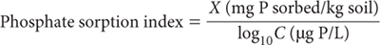
Report P sorption index on an air-dry basis.
ASPAC in 2001 adopted PBI as its preferred method for characterising the P buffer capacity (P sorptivity or P ‘fixing’ ability) of soils. The index was developed to be applicable across Australian soils, and has been correlated with other indices for measuring PBC. The development of PBI+ColP and PBI+OlsenP and their relationships to other single point indices, is described in Burkitt et al. (2002).
PBI+ColP or PBI+OlsenP can be used to: (a) assess the potential for leaching of soluble P through the soil; (b) adjust ‘critical’ Colwell-extractable P (Colwell 1963) values or ranges for optimum crop/pasture production; and (c) calculate ‘capital’ P fertiliser requirements for raising the existing Colwell- or Olsen-extractable P (Olsen et al. 1954) level to the appropriate ‘critical’ level.
This method (PBI+ColP) utilises the Colwell-P test as the measure of current soil P fertility. It also incorporates the colorimetric Murphy and Riley (1962) analytical finish. Alternative analytical finishes for the PBI component are provided that can slightly affect the results. A similar suite of methods (Methods 9I3a, b, c) provide for the use of Olsen-P as the measure of current soil P fertility, while Method 9I4 excludes a measure of current soil P fertility.
0.01 M CaCl2
Dissolve 1.4702 g calcium chloride dihydrate (CaCl2.2H2O) in deionised water and make volume to 1.0 L.
Table 9.6. ConcentratŠns of P in Working Standards for P sorptŠn index.
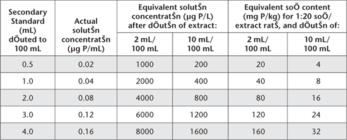
Reagent A (Ammonium Molybdate – Sulfuric Acid – Sb Solution)
Dissolve 12.0 g ammonium molybdate [(NH4)6Mo7O24.4H2O] in 400 mL of warm (not above 50°C) distilled (preferred) or deionised water. Cool then add 140 mL sulfuric acid (H2SO4; 18 M) slowly and with stirring to another 400 mL distilled or deionised water and re-cool. In a further 100 mL distilled or deionised water, dissolve 0.2669 g potassium antimony tartrate (KSbO.C4H4O6). Combine by adding initially the ammonium molybdate solution to the diluted H2SO4, stirring continuously. Re-cool, add the potassium antimony tartrate solution and make volume to 1.0 L. Store in borosilicate glass at ≈4°C to achieve a shelf life of several months. This solution contains 1.2% ammonium molybdate and 0.1 mg Sb/mL in ≈2.5 M H2SO4. See Note 1 of Method 9B2 on the reason for preferring distilled water.
Mixed Colour Reagent
For each 100 mL required, dissolve 1.056 g l-ascorbic acid (C6H8O6) in 100 mL of Reagent A. Prepare only as required as the shelf life does not exceed 24 h.
Phosphate Equilibrating Solution
1 L contains 100 mg P.
Dissolve 2.1964 g potassium dihydrogen orthophosphate (KH2PO4; previously dried at 130°C for 2 h) in deionised water. Also dissolve 7.351 g calcium chloride (CaCl2.2H2O) in deionised water. Mix, and make volume to 5.0 L. Add 10 drops of chloroform (CHCl3) to suppress biological activity. Store the solution in borosilicate glass, preferably cool (≈4°C) and in the dark, where it remains stable for at least 6 months.
Phosphorus Primary Standard
1 L contains 100 mg P.
Dissolve 0.4393 g potassium dihydrogen orthophosphate (KH2PO4; previously dried at 130°C for 2 h) in deionised water. Also dissolve 1.4702 g calcium chloride (CaCl2.2H2O) in deionised water. Mix, and make volume to 1.0 L. Add 2 drops of chloroform (CHCl3) to suppress biological activity. Store the solution in borosilicate glass, preferably cool (≈4°C) and in the dark, where it remains stable for at least 6 months.
Add aliquots of the P Primary Standard to 0.01 M CaCl2 to achieve final working standards ranging from 0 to 10 mg P/L in 0.01 M CaCl2.2H2O for the Murphy and Riley (1962) analytical finish.
Weigh 7.0 g air-dry soil (<2 mm) into a 100 mL bottle or centrifuge tube and add 70 mL of P Equilibrating Solution and 3 drops of chloroform (CHCl3) (other weight/volume combinations can be used provided a soil/solution ratio of 1:10 is preserved and the head space in the extracting vessel is about 25% of the total vessel volume). Stopper and shake for 17 h continuously end-over-end (e.g. 15 rpm, 20 cm radius) at 25°C. Centrifuge at 3000 rpm [RCF = 2096 G] or filter (Whatman No.5) to obtain uncontaminated, particulate-free supernatant solutions for P analysis. Contact time between supernatant and soil should not exceed 1 h.
For the Murphy and Riley (1962) analytical finish, dilute the cleared soil extracts 1+9 with 0.01 M CaCl2 and pipette 5 mL aliquots of the diluted extracts and working standards (0 to 10.0 mg P/L) in 50 mL volumetric flasks. Add sufficient 0.01 M CaCl2 to give an approximate volume of 40 mL. Dispense 4.0 mL Mixed Colour Reagent into each flask, make to volume with 0.01 M CaCl2, and mix.
Maintain a fixed time schedule for these operations including thorough mixing of flask contents. After 30 min, read absorbance at 882 nm in a 10 mm or other suitable cell (colour remains stable for some time beyond 30 min). Alternatively, an automated analytical finish can be used, guided by Method 9F2.
Calculate the amount of freshly sorbed P (Ps) in the soil (mg P/kg) as the difference between the initial amount of P added (=1000 mg P/kg at the specified soil/solution ratio of 1:10) and the amount of P left in the equilibrating solution, expressed as mg P/kg air-dry soil. The latter is calculated by multiplying the final solution P concentration (c in mg P/L) by 10 (because the soil/solution ratio is 1:10).
As PBI is derived from the Freundlich equation for describing the relationship between total P sorbed and final solution P concentration (i.e. the P sorption curve), the total amount of P sorbed by the soil is calculated as the amount of previously sorbed P, plus the amount of freshly sorbed P. The previously sorbed P is estimated as the Colwell-extractable P (Colwell 1963) status of the soil. The ‘total P sorbed’ for use in calculating PBI is therefore the addition of the Colwell-P to the amount of freshly sorbed P as calculated earlier.
The relevant PBI+ColP equation (see Note 1) is:
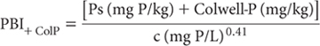
where:
Ps = freshly sorbed P (mg P/kg); and
c = final solution P concentration (mg P/L)
Report PBI+ColP on an air-dry (40°C) basis.
Table 9.7. Data and calculatŠns required to calculate PBI+ColP.
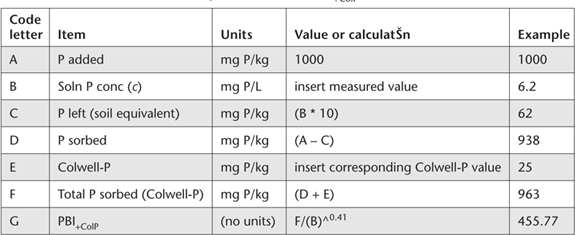
1. Calculations can be conveniently performed on a computer spreadsheet. Guidance is provided in Table 9.7.
This method is almost identical to Method 9I2a, apart from its analytical finish. This is undertaken by ICPAES. The method also permits the analysis of higher solution P concentrations (10 x), relative to the Murphy and Riley colorimetric finish.
0.01 M CaCl2 solution, the Phosphate Equilibrating Solution, and the P Primary Standard (1 L contains 100 mg P) are identical to those for Method 9I2a.
Add appropriate aliquots of the P Primary Standard to 0.01 M CaCl2 to achieve final working standards ranging from 0 to 100 mg P/L in 0.01 M CaCl2.
Weigh 7.0 g air-dry soil (<2 mm) into 100 mL bottle or centrifuge tube and add 70 mL of P equilibrating solution and 3 drops of chloroform (CHCl3) and proceed with soil equilibration as for Method 9I2a.
For ICPAES, aspirate clear soil extracts (as per Method 9I2a) and Working Standards (0 to 100 mg P/L), selecting an appropriate spectral line with due consideration for interferences and the type of instrument. For example, use 213.618 nm for radial mode ICPAES or 178.221 nm for axial mode ICPAES. This ‘finish’ measures all the P in solution regardless of the chemical species present.
Proceed as for Method 9I2a (and Note 1 for that method).
Report PBI+ColP on an air-dry (40°C) basis.
This method is very similar to Method 9I2a, apart from its analytical finish. This is undertaken by the colorimetric vanadate finish, which is suited to higher solution P concentrations than is the Murphy and Riley colorimetric finish.
0.01 M CaCl2 solution, the Phosphate Equilibrating Solution, and the P Primary Standard (1L contains 100 mg P) are identical to those for Method 9I2a.
Vanadium molybdate solution: Dissolve 40.00 g ammonium molybdate and 2.00 g ammonium (meta) vanadate in 1.5 L warm distilled (preferred) or deionised water (temperature should not exceed 50°C). Add 280 mL nitric acid (sg. 1.20, see below) and make to 2.0 L with water. See Note 1 of Method 9B2 on the reason for preferring distilled water.
Dilute 780 mL concentrated nitric acid (sg. 1.42) to 2.0 L with distilled or deionised water.
Add appropriate aliquots of the P Primary Standard to 0.01 M CaCl2 to achieve final working standards ranging from 0 to 100 mg P/L in 0.01 M CaCl2.
Weigh 7.0 g air-dry soil (<2 mm) into 100 mL bottle or centrifuge tube and add 70 mL of P Equilibrating Solution and 3 drops of chloroform (CHCl3) and proceed with soil equilibration as for Method 9I2a.
For the vanadomolybdate analytical finish, pipette 10 mL aliquots of cleared soil extracts (as per Method 9I2a) and Working Standards (0 to 100 mg P/L) into 100 mL volumetric flasks and add sufficient 0.01 M CaCl2 to give an approximate volume of 60 mL. Next add 25 mL of vanadomolybdate solution, make to volume with 0.01 M CaCl2, and mix. After 60 min, read absorbance at 400 nm in a 10 mm or other suitable cell (colour remains stable for some time).
Proceed as for Method 9I2a (and Note 1 for that method).
Report PBI+ColP on an air-dry (40°C) basis.
This method is identical to Method 9I2a in all respects, except for the final calculation, which uses Olsen-P (and an adjustment factor of 4.59 × Olsen-P; units of mg P/kg) in place of Colwell-P as the measure of current soil P fertility.
Proceed as for Method 9I2a (and Note 1 of this method).
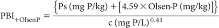
Table 9.8. Data and calculatŠns required to calculate PBI+OlsenP.
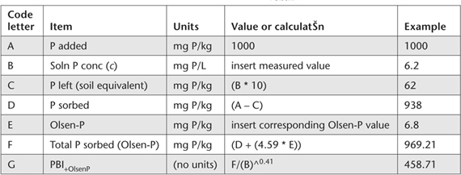
where:
Ps = freshly sorbed P (mg P/kg); and
c = final solution P concentration (mg P/L)
Report PBI+OlsenP on an air-dry (40°C) basis.
1. Calculations can be conveniently performed on a computer spreadsheet. Guidance is provided in Table 9.8.
This method is identical to Method 9I2b in all respects, except for the final calculation, which uses Olsen-P (and an adjustment factor of 4.59 × Olsen-P; units of mg P/kg) in place of Colwell-P as the measure of current soil P fertility. The calculation (and Note 1) of Method 9I3a applies. The ‘finish’ includes all P in solution regardless of the chemical species present.
Report PBI+OlsenP on an air-dry (40°C) basis.
This method is identical to Method 9I2c in all respects, except for the final calculation, which uses Olsen-P (and an adjustment factor of 4.59 × Olsen-P; units of mg P/kg) in place of Colwell-P as the measure of current soil P fertility. The calculation (and Note 1) of Method 9I3a applies.
Report PBI+OlsenP on an air-dry (40°C) basis.
This method is identical to Method 9I2a and Method 9I3a, except that Colwell-P and Olsen-P values, respectively, are not included in the calculation of PBI. The relevant equation is shown below and explained in more detail in Table 9.9 of Note 1.
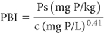
where:
Table 9.9. Data and calculatŠns required to calculate PBIunadj.
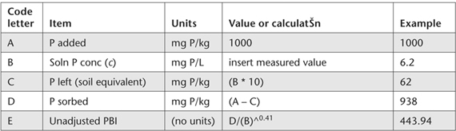
Ps = freshly sorbed Pl (mg P/kg); and
c = final solution P concentration (mg P/L)
Report unadjusted PBI (PBIunadj) on an air-dry (40°C) basis.
1. Calculations can be conveniently performed on a computer spreadsheet. Guidance is provided in Table 9.9.
This method is identical to Method 9I2b and Method 9I3b, except that Colwell-P and Olsen-P values, respectively, are not included in the calculation of PBI. The relevant equation is shown in Method 9I4a, Note 1, Table 9.9. The ‘finish’ includes all P in solution regardless of the chemical species present.
Report unadjusted PBI on an air-dry (40°C) basis.
This method is identical to Method 9I2c and Method 9I3c, except that Colwell-P and Olsen-P values, respectively, are not included in the calculation of PBI. The relevant equation is shown in Method 9I4a, Note 1, Table 9.9.
Report unadjusted PBI on an air-dry (40°C) basis.
Sorption curves can be established by the addition to soil of graded amounts of P in 0.01 M CaCl2 or 0.02 M potassium chloride (KCl). The former solution is preferred here because: (i) it has been more commonly used in Australia and elsewhere (Ozanne and Shaw 1967; Fox 1978; Probert 1983), and (ii) it is less aggressive than KCl. The supernatant P concentration (C) is measured following an equilibration period of 17 h. Calculation of the amount of P sorbed can then be made.
The P sorption curve for a given soil is constructed by plotting P sorbed against log10C for each addition of P. The plot is usually linear for most soils up to a supernatant P concentration of at least 0.1 mg P/L.
The equilibrium P concentration (EPC) is derived by extrapolation of the P sorption curve to the point when P sorbed = 0 (zero). The PBC, which is a reflection of the P sorbing or P fixing ability of the soil, corresponds to the slope of the regression line fitted to the P sorption curve. The higher the slope the higher the PBC.
Manual and automated options for measuring the supernatant P concentration are included, both based on the reagents of Murphy and Riley (1962). It is chemically challenging to include soils of widely different PBCs in the same batch of samples, unless there is prior knowledge sufficient to ‘tailor’ the solution concentrations of the graded P additions.
In this method, P sorption curves are established by adding graded amounts of PO43– solutions in 0.01 M CaCl2 to air-dry soil and equilibrating for 17 h at 25°C at a soil/solution ratio of 1:10 (different to that of Ozanne and Shaw 1967). The manual colorimetric procedure of Murphy and Riley (1962) is used to determine the concentration of P remaining in solution following equilibration with soil.
0.01 M Calcium Chloride
As for Method 4B1.
Reagent A (Ammonium Molybdate – Sulfuric Acid – Sb Solution)
As for Method 9A2.
Mixed Colour Reagent
As for Method 9A2.
Phosphorus Stock Solution
1 mL contains 500 μg of P.
Dissolve 2.1968 g potassium dihydrogen phosphate (KH2PO4; previously dried at 130°C for 2 h) in 0.01 M CaCl2 and make to volume of 1.0 L. Add 2 drops of chloroform (CHCl3) to suppress biological activity. Store solution in borosilicate glass, preferably cool (≈4°C) and in the dark.
Phosphate Equilibrating Solutions
To obtain final supernatant P concentrations at equilibrium that range from 5–100 μg P/L, several graded solutions are required between 0 and 25 000 μg P/L, corresponding to 0–25 mg P/L. Use Table 9.10 as a guide to their preparation.
Phosphorus Primary Standard
As for Method 9A2.
Phosphorus Secondary Standard
1 L contains 5000 μg of P.
Dilute 50.0 mL P Primary Standard, with constant stirring to 500 mL with 0.01 M CaCl2. This solution should be freshly prepared each time working solutions are made.
Phosphorus Working Standards
Add 0, 0.5, 1.0, 2.0, 4.0, 8.0, 12.0, 16.0, 20.0 and 24.0 mL P Secondary Standard to separate 500 mL volumetric flasks containing some 0.01 M CaCl2. When diluted to volume with 0.01 M CaCl2 these working standards contain 0, 5, 10, 20, 40, 80, 120, 160, 200 and 240 μg P/L. For a 1:10 soil/solution ratio and equal volumes of working standards and soil extracts, the supernatant P values of working standards correspond to 0, 0.05, 0.1 … 2.4 mg P/kg.
Table 9.10. Volumes of P stock solutŠn required for expected P sorptŠn.
Volume of P Stock SolutŠn (mL) |
Initial P concentratŠn of (μg P/L) |
Equivalent amount of P (mg P/kg) |
0.5 |
250 |
2.5 |
1.0 |
500 |
5.0 |
2.0 |
1000 |
10 |
4.0 |
2000 |
20 |
6.0 |
3000 |
30 |
8.0 |
4000 |
40 |
10.0 |
5000 |
50 |
15.0 |
7500 |
75 |
20.0 |
10 000 |
100 |
30.0 |
15 000 |
150 |
40.0 |
20 000 |
200 |
50.0 |
25 000 |
250 |
Wash glassware and filter papers used for filtration and colorimetric analysis before use with dilute (1+4) HCl then rinse and dry.
Weigh 5.0 g air-dry soil (<2 mm) into 100 mL centrifuge tubes or suitable extraction bottles. At least 5 weighings of each soil are required. Select a minimum of five graded P equilibrating solutions to give a desired range of supernatant P concentrations, which will depend on the particular soil type. Separately dispense 50.0 mL of each selected P Extracting Solution to the multiples of each soil. Add 2 drops of chloroform (CHCl3) to each container, stopper, and shake end-over-end for 17 h at 25°C.
Following equilibration, centrifuge or filter (Whatman No. 5) to obtain uncontaminated, particle-free extracts.
Pipette aliquots (usually 25–40 mL) of clear soil extracts and working standards to 50 mL volumetric flasks and add sufficient 0.01 M CaCl2 to give an approximate volume of 40 mL. Dispense 4.0 mL Mixed Colour Reagent into each flask, make to volume with 0.01 M CaCl2, and mix. Maintain a fixed time schedule for these operations including thorough mixing of flask contents. After 30 min, read absorbance at 882 nm in a 50 mm or other suitable cell (colour remains stable for some time beyond 30 min). Prepare a calibration curve (or regression equation) relating absorbance to concentration of P in μg/L and determine the supernatant P concentration (C).
Psorbed(mg P/kg) =
InitialP added(mg P/kg) - Supernatant Pconcentration (mgP/kg)
Repeat for each P solution used.
For each soil, plot P sorbed (mg P/kg) on Y axis against log10C (C expressed as μg P/L), using log-linear graph paper (or plotting software). Extrapolate the line to the point of zero sorption (intercept on X axis) to derive log10 equilibrium P concentration. Derive EPC (units of μg P/L) by taking the antilog of log10 EPC. Also derive the slope of what should be a linear line to obtain the P buffer capacity (PBC; units of mg/kg/log10 μg/L).
Report EPC and PBC on an air-dry basis.
This method is equivalent to Method 9J1 except that an automated finish (Warrell and Moody 1984) based on the colorimetric procedure of Murphy and Riley (1962) is used to obtain the concentration of P remaining in solution following equilibration with soil. While AutoAnalyzer I/II technology is described, microbore or FIA are appropriate alternatives, ideally without any heating beyond 37°C to speed colour development. The analyst must be guided by the operational instructions and directions given by the manufacturer. This could require changes to the specified reagents and to the flow diagram provided for this method. Whichever technology is used, the results obtained should be close to those obtained by Method 9J1.
0.01 M Calcium Chloride
As for Method 4B1.
Ammonium Molybdate Solution
As for Method 9B2.
Ascorbic Acid Solution
As for Method 9F2.
Potassium Antimony Tartrate Solution
As for Method 9B2.
Working Reagent
As for Method 9F2.
Acid-Phosphate Diluent
As for Method 9F2.
Phosphorus Stock Solution
As for Method 9J1.
Phosphorus Equilibrating Solutions
As for Method 9J1.
Phosphorus Primary Standard
As for Method 9A2.
As for Method 9J1.
Phosphorus Working Standards
As for Method 9J1.
Prepare particulate-free, equilibrated soil extracts as described in Method 9I1 and transfer to dry tubes for automated colorimetric analysis.
Ensure individual components of the continuous flow analyser system for the determination of P are connected as detailed on the segmented flow manifold for calcium chloride-extractable P (Figure 9.10), except that 0.01 M CaCl2 should replace 0.005 M CaCl2 as the sampler wash solution; instrument selections and settings should be in accord with manufacturer’s instructions. This may require changes to the specified reagents and to the flow diagram provided for this method.
‘Condition’ the manifold before use with reagents and relevant standard solutions.
Prepare a calibration curve from the P Working Standards and record the equilibrium P concentration ‘C’ as μg P/L. Also record the supernatant P value as mg P/kg for determination of P sorbed.
As for Method 9J1.
Report EPC and PBC on an air-dry basis.
Tests included in this section involve calculations using results obtained from methods described earlier in the chapter (Colwell-P and PBI+ColP; Methods 9B and 9I2, respectively), and in Chapter 18 Mehlich 3-P (Method 18F1/18F2), Mehlich 3-Fe (Method 18F1) and Mehlich 3-Al. (Method 18F1). The tests are the Mehlich 3 P Saturation Ratio (M3PSR) and the ratio of Colwell-P/PBI+ColP. Very high levels of 0.005 M CaCl2-extractable P (methods 9F1/9F2) are also indicative of soils with above normal risk of P transport in runoff and leachate. Tentative interpretative criteria are summarised in Table 9.11.
Table 9.11. Tentative interpretative criteria for three soÕ environmental P tests.
Test |
Tentative interpretative criteria |
Reference |
M3PSR {molar ratio of Mehlich 3 extractable P/(Mehlich 3-Fe + Mehlich 3-Al)} |
Environmental P hazard/risk increases sharply above 0.2. |
Maguire and Sims (2002); Bloesch and Rayment (2006); Sims et al. (2006) |
Colwell-P/PBI+ColP Ratio |
Environmental P hazard/risk increases above 2.0. |
|
0.005 M CaCl2 extractable P (methods 9F1/9F2) |
Environmental P hazard/risk increases above 2000 μg P/kg |
The data used to calculate M3PSRcolour are obtained from the multi-element soil test of Mehlich (1984), specifically Method 18F1 for Mehlich 3-Fe and Mehlich 3-Al and Method 18F2 for Mehlich 3 P, using the colorimetric Murphy and Riley (1962) analytical finish. All input data are expressed as molar concentrations. Expect a slightly lower Mehlich 3 P value with the colorimetric finish relative to the corresponding value obtained by IPCAES (Pierzynski et al. 2005). Interpretative guidance is provided in Method 9K. For brevity, Mehlich is shown as Meh in the next calculation.
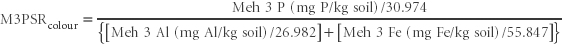
Report M3PSRcolour (as a unit-less index value) on a w/w air-dry basis.
The data used to calculate M3PSRICPAES are obtained from the multi-element soil test of Mehlich (1984), specifically Method 18F1 for Mehlich 3-Fe, Mehlich 3-Al and Mehlich 3 P. All use ICPAES as the analytical finish. All input data are expressed as molar concentrations. Expect a slightly higher Mehlich 3 P value with ICPAES relative to the alternative colorimetric finish. Interpretative guidance is provided in Method 9K. For brevity, Mehlich is shown as Meh in the following calculation.
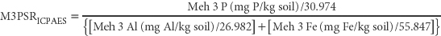
Report M3PSRICPAES (as a unit-less index value) on a w/w air-dry basis.
The ratio of Colwell-P/PBI+ColP, i.e. Method 9B/9I2 provides an approximate alternative to Method 9K1 for laboratories that perform Method 9B and 9I2 but not the multi-element Mehlich 3 test (18F1 and perhaps 18F2). Interpretative guidance is provided in 9K.
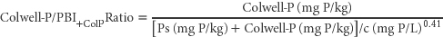
Report Colwell-P/PBI+ColP Ratio (air-dry)
Abbott TS (Ed) (1989) Extractable phosphorus and phosphorus sorption. In Soil Testing Service – Methods and Interpretations. pp. 21–33. New South Wales Department of Agriculture and Fisheries, Rydalmere.